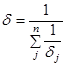
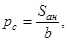

ЦНИИпромзданий Госстроя СССР
ПОСОБИЕ
по проектированию отдельно стоящих опор и эстакад
под технологические трубопроводы
(к СНиП 2.09.03-85)
Москва 1989
ЦЕНТРАЛЬНЫЙ НАУЧНО-ИССЛЕДОВАТЕЛЬСКИЙ И ПРОЕКТНО-ЭКСПЕРИМЕНТАЛЬНЫЙ ИНСТИТУТ ПРОМЫШЛЕННЫХ ЗДАНИЙ И СООРУЖЕНИЙ
(ЦНИИпромзданий ГОССТРОЯ СССР)
Утверждено приказом
ЦНИИпромзданий
Госстроя СССР
от 15.01.86 г. № 6
Рекомендовано к изданию решением секции несущих конструкций Научно-технического совета ЦНИИпромзданий Госстроя СССР.
Пособие по проектированию отдельно стоящих опор и эстакад под технологические трубопроводы (к СНиП 2.09.03.-85)/ЦНИИпромзданий, 1989.
Содержит положения по проектированию стальных и железобетонных отдельно стоящих опор и эстакад под технологические трубопроводы.
Приведены примеры расчетов отдельно стоящих опор и эстакад.
Для инженерно-технических работников проектных и строительно-монтажных организаций.
На предприятиях химической, нефтеперерабатывающей, газовой, энергетический, металлургической промышленности широко применяется транспортирование продукта по трубопроводам, прокладываемым над землей по отдельно стоящим опорам и эстакадам.
Проектирование отдельно стоящих опор и эстакад осуществляется организациями различного профиля как по типовым, так и по индивидуальным проектам.
Для рационального проектирования конструкций опор и эстакад большое значение имеют исследования, проведенные в последнее время по снижению их материалоемкости: уменьшению горизонтальных технологических нагрузок, разработке конструкций опор и эстакад с применением свай и предварительно напряженных конструкций и др.
Пособие по проектированию отдельно стоящих опор и эстакад под технологические трубопроводы, рассматривающие вопросы объемно-планировочных и конструктивных решений, нагрузок, расчета конструкций, примеров расчета, разработано впервые, что должно способствовать созданию экономичных решений и сокращению сроков проектирования.
Настоящее Пособие разработано ЦНИИпромзданий Госстроя СССР (кандидаты техн. наук А.Н. Добромыслов - руководитель темы, А.А. Болтухов, Н.А. Ульянов) при участии Атомтеплоэлектропроект Минэнерго СССР (кандидаты техн. наук Л.Ш. Лундин, В.И. Петров, инженеры В.Б. Зорин, А.М. Монин), ЦНИИпроектстальконструкция Госстроя СССР (инженеры Г.Ф. Васильев, В.М. Лаптев), НИИпромстрой Минпромстроя СССР (кандидаты техн. наук З.В. Бабичев, А.Л. Готман), ГИАП Минудобрений СССР (инженеры Ю.А. Гусев, В.Ф. Харламов).
При составлении раздела «Нагрузки и воздействия» использованы разработанные ЦНИИСК Госстроя СССР Рекомендации по определению нагрузок на отдельно стоящие опоры и эстакады под трубопроводы.
1.1. Настоящее Пособие содержит материалы по проектированию новых и реконструируемых отдельно стоящих опор и эстакад для надземных технологических трубопроводов различного назначения, расположенных как внутри, так и вне цехов, и установок промышленных предприятий.
Примечания: 1. К технологическим трубопроводам относятся трубопроводы, предназначенные для транспортирования в пределах промышленного предприятия или группы этих предприятий различных веществ (сырья, воды, промежуточных и конечных продуктов), тепловые сети и т.п., необходимые для ведения технологического процесса или эксплуатации оборудования.
2. Настоящее Пособие не распространяется на проектирование отдельно стоящих опор и эстакад для прокладки магистральных газопроводов и нефтепроводов, предусмотренных главой СНиП 2.03.06-85 «Магистральные трубопроводы».
3. При проектировании отдельно стоящих опор и эстакад под технологические трубопроводы, предназначенные для строительства на вечномерзлых, набухающих, просадочных грунтах, должны соблюдаться соответствующие требования нормативных документов, утвержденных или согласованных Госстроем СССР.
4. При проектировании трубопроводных эстакад, по которым проложены транзитные кабели, ленточные конвейеры и другие коммуникации, должны соблюдаться соответствующие требования, установленные СНиП 2.09.03-85 для комбинированных эстакад.
1.2. Опоры и эстакады под технологические трубопроводы представляют собой инженерные сооружения, предназначенные для размещения технологических трубопроводов. Проектирование указанных сооружений должно осуществляться в соответствии со СНиП 2.09.03-85.
Отдельно стоящая опора под трубопроводы состоит из одной или нескольких колонн, связей, траверсы и фундамента (рис. 1, а).
Рис. 1. Схема прокладки трубопроводов по опорам и эстакадам
а - прокладка по опорам; б - прокладка по эстакадам; 1 - промежуточная опора; 2 - анкерная промежуточная опора; 3 - анкерная концевая опора; 4 - компенсатор; 5 - трубопровод; 6 - траверса; 7 - пролетное строение; 8 - опорная часть трубопровода; 9 - колонна; 10 - фундамент; 11 - вставки температурного блока; 12 - ось температурного разрыва.
Эстакада состоит из опор (опора включает в себя: колонны, связи, ригели, фундаменты), пролетных строений (ферм, балок), траверс, связей по фермам (рис. 1, б).
1.3. В продольном направлении отдельно стоящие опоры и эстакады следует разбивать на температурные блоки, длина которых принимается в зависимости от предельных расстояний между неподвижными опорными частями трубопроводов и расчета конструкций на климатические воздействия.
1.4. Температурный блок (см. рис. 1) состоит из пролетных строений, одной анкерной опоры и промежуточных опор.
Анкерные промежуточные опоры следует устанавливать, как правило, в середине температурного блока.
В местах поворота или конца трассы применяются анкерные угловые или концевые опоры.
Примечания: 1. При прокладке трубопроводов по отдельно стоящим опорам образуется условный температурный блок, включающий в себя анкерную и промежуточные опоры.
2. Для эстакад с железобетонными опорами применяется температурный блок без анкерных опор.
1.5. Передача нагрузок на отдельно стоящие опоры и эстакады от трубопроводов производится посредством подвижных и неподвижных опорных частей трубопроводов.
Восприятие температурных удлинений трубопроводов осуществляется компенсаторами. Опорные части и компенсаторы относятся к деталям трубопроводов и задаются заданием на проектирование.
1.6. Отдельно стоящие опоры и эстакады для технологических трубопроводов должны проектироваться на срок эксплуатации не менее 25 лет.
1.7. Прокладка трубопроводов на эстакадах, высоких или низких отдельно стоящих опорах применяется при любом сочетании трубопроводов независимо от свойств и параметров транспортируемых веществ.
1.8. Пересечение и параллельное размещение отдельно стоящих опор и эстакад с воздушными линиями электропередач, а также совместная прокладка трубопроводов и электрокабелей должны осуществляться в соответствии с Правилами устройства электроустановок.
1.9. При проектировании железобетонных и стальных конструкций отдельно стоящих опор и эстакад должны выполняться требования, предусматриваемые СНиП 2.03.11-85 «Защита строительных конструкций от коррозии». Стальные конструкции указанных сооружений должны быть заземлены.
1.10. В зависимости от объемно-планировочных и конструктивных решений отдельно стоящие опоры и эстакады могут проектироваться различных типов, отличающихся между собой по следующим признакам:
по материалу конструкций: железобетонные, стальные, комбинированные (стальные и железобетонные);
по конструктивным решениям несущих конструкций: пролетных строений, опор, фундаментов;
по высоте верха опор: низкие и высокие;
по способам разложения труб на опорах и эстакадах: одноярусное, двухъярусное, многоярусное.
Выбор тех или иных конструктивных решений производится на основании действующих нормативных документов, технологических требований, противопожарных требований, технико-экономических обоснований, требований типизации и унификации, действующих типовых проектов, а также возможной реконструкции предприятия.
1.11. Исходными данными для разработки конструкций опор и эстакад являются: технологическое задание на проектирование, район строительства, генеральный план местности с нанесением на нем всех подземных и наземных коммуникаций, данные инженерной геологии, сведения о производственной базе строительных конструкций.
1.12. Технологическое задание на проектирование отдельно стоящих опор и эстакад должно включать:
а) план и продольный профиль трубопроводной трассы с указанием привязки подвижных и неподвижных опорных частей трубопроводов, компенсаторов, мест расположения анкерных опор и компенсирующих устройств;
б) наименование трубопроводов, их привязка к строительным конструкциям;
в) характеристика трубопроводов: наружный диаметр, нагрузка от веса трубопроводов, изоляционной конструкции, транспортируемого вещества, толщина изоляционной конструкции, возможность отложения пыли внутри трубопроводов, температура трубопроводов;
г) тип опорных частей и максимально возможные их перемещения, горизонтальные нагрузки на неподвижные опорные части трубопроводов, размеры и тип компенсаторов;
д) устройства для обслуживания трубопроводов: лестницы, проходные мостики, площадки, оборудование;
е) данные по резервным нагрузкам и габаритам при возможной реконструкции предприятия;
ж) предельные перемещения конструкций и оснований;
з) особые технологические требования.
2.1. При проектировании отдельно стоящих опор и эстакад следует преимущественно применять утвержденные типовые конструкции и узлы.
2.2. Прокладка трубопроводных сетей должна осуществляться в соответствии с требованиями СНиП II-89-90 «Генеральные планы промышленных предприятий».
2.3. Расстояние от межцеховых трубопроводов или от края эстакады до зданий и наружных сооружений следует принимать в соответствии с требованиями СНиП II-89-80 и СНиП 2.01.02-85 «Противопожарные нормы проектирования зданий и сооружений», а также отраслевыми противопожарными нормами и правилами.
2.4. Прокладку трубопроводных сетей следует предусматривать вдоль проездов и дорог, как правило, со стороны, противоположной размещению тротуаров и пешеходных дорожек, выбирая по возможности кратчайшее расстояние между зданиями и сооружениями. Внутри производственных кварталов трассы трубопроводов следует проектировать параллельно линиям застройки.
2.5. Пересечение трубопроводов с железными и автомобильными дорогами должно предусматриваться, как правило, под углом 90°, но не менее 45°.
2.6. Высоту (расстояние от планировочной отметки земли до верха траверсы) отдельно стоящих опор и эстакад следует принимать: для низких отдельно стоящих опор - от 0,3 до 1,2 м, кратной 0,3 м в зависимости от планировки земли и уклонов трубопроводов; для высоких отдельно стоящих опор и эстакад - кратной 0,6 м, обеспечивающий проезд под трубопроводами и эстакадами железнодорожного и автомобильного транспорта в соответствии с габаритами приложения строений по ГОСТ 9238-83 и СНиП 2.05.02-85.
2.7. Прокладку трубопроводов на эстакадах рекомендуется применять при большом количестве трубопроводов малых диаметров, ответвлений и пересечений, при большой плотности застройки территории предприятия.
2.8. Прокладку трубопроводов на низких опорах следует предусматривать по территории, не подлежащим застройке, при отсутствии, как правило, пересечения с дорогами, а также вне пахотных земель.
2.9. Места разрывов температурных блоков следует, как правило, совмещать с компенсирующими устройствами трубопроводов, при этом необходимо предусматривать наибольшую возможную длину температурных блоков.
2.10. Раскладка трубопроводов на траверсах эстакад и отдельно стоящих опор производится с учетом наиболее рационального решения компенсаторных узлов, упрощения развязки узлов, упрощения развязки узлов трубопроводов в местах ответвлений, а также с учетом наиболее рационального загружения строительных конструкций.
2.11. В поперечном сечении эстакад и отдельно стоящих опор рекомендуется равномерное распределение нагрузки от трубопроводов с возможной перегрузкой одной из сторон не более 20 % (см. п. 4.12).
2.12. При прокладке трубопроводов по эстакадам гибкие компенсаторы рекомендуется устанавливать между отдельными температурными блоками или в наиболее возможной близости от этого места (не далее 5 м по длине эстакады от температурного разрыва).
2.13. Для уменьшения нагрузок на пролетные строения эстакад рекомендуется использовать самонесущую способность трубопроводов большого диаметра с опиранием их только на траверсы над опорами эстакад или вблизи них.
2.14. Места ответвлений на основной эстакаде рекомендуется принимать по табл. 1.
|
Рекомендуемое место ответвления на основной эстакады |
|
|
< 0,3 |
В любом месте |
|
0,3 - 0,5 |
Не далее 5 м от любой опоры |
|
> 0,5 |
То же, от анкерной опоры |
2.15. В целях сокращения ширины эстакады и отдельно стоящих опор мелкие трубопроводы диаметром 50 - 200 мм допускается крепить к большим трубопроводам, а также в отдельных случаях на дополнительных консолях, установленных к стойкам между ярусами эстакад.
2.16. Для эстакад с анкерными опорами неподвижные закрепления трубопроводов рекомендуется осуществлять на траверсах этих опор в каждом блоке.
При прокладке трубопроводов по отдельно стоящим опорам на анкерных должно предусматриваться неподвижное крепление всех или части трубопроводов.
2.17. При проектировании отдельно стоящих опор и эстакад уклон трубопроводов должен создаваться за счет изменения отметки верхнего обреза фундамента или длины колонн с учетом рельефа поверхности земли вдоль трассы.
2.18. Расстояние между отдельно стоящими опорами под трубопроводы должны назначаться исходя из расчета труб на прочность и жесткость.
Шаг между опорами эстакад рекомендуется принимать 12, 18, 24 и 30 м.
2.19. При прокладке трубопроводов на низких опорах расстояние от поверхности земли до низа труб или теплоизоляции должно быть не менее 0,35 м при ширине группы труб менее 1,5 м и 0,5 м - при 1,5 м и более. Для перехода через трубопроводы следует предусматривать пешеходные мостики шириной не менее 0,9 м.
2.20. При прокладке по эстакадам трубопроводов, требующих регулярного обслуживания (не менее одного раза в смену), а также в многоярусных эстакадах должны предусматриваться, как правило, проходные мостики шириной не менее 0,6 м с перилами высотой не менее 1 м и через каждые 200 м лестницы - вертикальные с шатровым ограждением или маршевые.
Проходные мостики при прокладке по эстакадам и отдельно стоящим опорам рекомендуется предусматривать также в местах пересечения железных дорог, оврагов и на других труднодоступных для обслуживания трубопроводов местах.
3.1. Отдельно стоящие опоры и эстакады следует, как правило, проектировать сборными из унифицированных железобетонных конструкций с ненапряженной или напряженной арматурой. Применение стальных конструкций допускается в соответствии с Техническими правилами по экономному расходованию основных строительных материалов (ТП 101-81*).
3.2. Выбор материалов строительных конструкций следует производить на основании СНиП II-23-81 «Стальные конструкции» и СНиП 2.03.01-84 «Бетонные и железобетонные конструкции».
3.3. Конструкции отдельно стоящих опор и эстакад под трубопроводы с легковоспламеняющимися и горючими жидкостями и газами должны проектироваться несгораемыми.
3.4. Тип опорных частей трубопроводов определяется технологическим заданием в зависимости от величины передаваемых нагрузок и возможного перемещения трубопровода. При выборе подвижных частей следует стремиться к применению устройств, снижающих коэффициент трения, например прокладок из фторопласта и др.
3.5. Железобетонные опоры могут применяться с колоннами, защемленными в отдельные фундаменты, в виде одиночных свай-колонн, объединенных в плоские или пространственные системы; в виде колонн, установленных на одно-свайные фундаменты из свай-оболочек и буронабивных свай.
3.6. Колонны стальных опор следует применять жестко соединенными с фундаментами. Допускается применение шарнирного опирания на фундаменты при условии обеспечения устойчивости опор в продольном направлении пролетными строениями или трубами и анкерными опорами.
3.7. Для отдельно стоящих опор с применением железобетонных шпал, температурный блок компонуется из промежуточных опор в виде железобетонных шпал, укладываемых на песчаную подушку, защищенную от выдувания путем пропитки ее битумом, и анкерных низких железобетонных опор (рис. 2). Указанные конструкции опор следует применять при непучинистых грунтах.
Рис. 2. Конструктивная схема шпальных отдельно стоящих опор
1 - шпальная промежуточная опора; 2 - анкерная промежуточная опора; 3 - железобетонная траверса; 4 - щебень с пропиткой битумом; 5 - песчаная засыпка; 6 - планировочная отметка земли; 7 - высота растительного слоя.
3.8. Для отдельно стоящих низких и высоких железобетонных опор (рис. 3 и 4) температурный блок компонуется из промежуточных опор прямоугольного или кольцевого сечения и одной анкерной промежуточной опоры, выполняемой обычно такого же сечения, но с усиленным армированием. Анкерные концевые и анкерные угловые опоры могут быть выполнены в виде пространственных железобетонных или стальных опор.
Рис. 3. Конструктивная схема отдельно стоящих железобетонных опор
1 - железобетонная траверса; 2 - промежуточная железобетонная опора; 3 - анкерная промежуточная железобетонная опора; 4 - фундамент
Рис. 4. Конструкция железобетонных отдельно стоящих опор
а - узел опирания траверс на колонну; б - пример армирования траверсы; в - пример армирования колонны арматурой без предварительного напряжения; г - пример армирования колонны предварительно напряженной арматурой; 1 - закладная деталь; 2 - траверса; 3 - колонна; 4 - отверстие для подвески трубопроводов; 5 - соединительные стержни; 6 - спираль; 7 - предварительно напряженная арматура
3.9. Для эстакад, выполняемых полностью из железобетонных конструкций или комбинированных конструкций (железобетонных опор и стальных пролетных строений) температурный блок должен компоноваться, как правило, из одних промежуточных опор (рис. 5 и 6). Горизонтальные нагрузки, действующие вдоль оси трассы, воспринимаются всеми опорами температурного блока.
Рис. 5. Конструктивная схема железобетонных эстакад
1 - рядовая траверса; 2 - усиленная траверса; 3 - балка пролетного строения; 4 - опора; 5 - вставка температурного блока; 6 - фундамент
Рис. 6. Конструктивная схема двухъярусной эстакады
1 - железобетонная опора эстакады; 2 - стальные фермы пролетного строения; 3 - стальные траверсы пролетного строения; 4 - связи; 5 - фундамент
3.10. Для отдельно стоящих опор и эстакад, выполняемых полностью из стальных конструкций (рис. 7), температурный блок должен компоноваться из промежуточных и одной анкерной опоры, на которую передаются все горизонтальные нагрузки, действующие вдоль данного блока.
Рис. 7. Конструктивная схема одноярусной эстакады
1 - траверса; 2 - ферма пролетного строения; 3 - промежуточная опора; 4 - анкерная опора; 5 - вставки температурного блока; 6 - связи между фермами; 7 - фундамент; 8 - диафрагма-распорка опоры
3.11. Траверсы для опирания трубопроводов подразделяются на рядовые и усиленные. На рядовых траверсах должно быть предусмотрено подвижное опирание трубопроводов, а на усиленных - неподвижное закрепление. Железобетонные траверсы рекомендуется проектировать прямоугольного сечения (рис. 4). Железобетонные траверсы должны иметь стальные закладные детали для размещения опорных частей трубопроводов и для крепления их к колоннам опоры или пролетным строением эстакад. Стальные траверсы рекомендуется выполнять коробчатого сварного сечения из двух швеллеров или гнутых замкнутых профилей (рис. 8).
Рис. 8. Узлы опирания стальных конструкций
а - траверсы на колонну; б - фермы на железобетонную опору; 1 - колонна; 2 - траверса; 3 - опорное ребро; 4 - железобетонная колонна; 5 - ферма пролетного строения
3.12. В местах разрывов температурных блоков следует при необходимости предусматривать вставки для размещения компенсирующих устройств. Примеры решения вставок для отдельно стоящих опор и для железобетонной эстакады показаны на рис. 9.
Рис. 9. Пример решения опор под компенсаторы
а - в виде отдельно стоящих опор; б - в виде вставки для двухъярусной эстакады; 1 - промежуточные опоры; 2 - опора на вылете компенсатора; 3 - траверса эстакады; 4 - стальные балки
3.13. Пролетные строения эстакад рекомендуется выполнять в виде железобетонных предварительно напряженных балок при пролетах до 12 м или стальных и железобетонных ферм.
3.14. Пролетные строения из стальных ферм следует выполнять в виде пространственных конструкций, состоящих из двух вертикальных ферм, соединенных между собой по верхнему и нижнему поясу связями и траверсами.
3.15. Стержни стальных ферм пролетных строений рекомендуется проектировать из одиночных уголковых профилей.
3.16. Стальные промежуточные плоские опоры следует применять решетчатыми с ветвями из двутавров и решеткой из уголков или гнуто-сварных профилей замкнутого сечения. Для придания конструкции опор большей жесткости от скручивания необходимо предусматривать диаграммы-распорки из швеллеров или уголков с планками, соединяющих ветви между собой.
Анкерные опоры следует составлять их двух плоских опор, соединенных между собой вдоль трассы вертикальными связями. Пространственная жесткость анкерных опор обеспечивается горизонтальными связями в уровне низа траверс и по высоте опор. Сечение решетки связей стальных опор рекомендуется принимать из одиночных уголковых или замкнутых профилей, принимая углы раскосов связей равными 40 - 50°.
3.17. Выбор схемы горизонтальных связей между вертикальными фермами следует производить в зависимости от расстояния между ними. При расстояниях между вертикальными фермами 3 м и менее следует принимать треугольную решетку, а при расстоянии более 3 м - крестовую решетку.
Связи следует принимать из одиночных уголковых или замкнутых прямоугольных профилей.
3.18. Сопряжение пролетных строений эстакад с опорами рекомендуется выполнять путем передачи давления на опору центрально. Конструкция узла сопряжения должна обеспечивать передачу продольных горизонтальных сил с пояса одной фермы на пояса смежной фермы.
3.19. Отдельные фундаменты под опоры следует проектировать сборной или монолитной конструкции. Высоту фундамента следует назначать по условиям заглубления в грунт и условиям заделки колонн опоры. Площадь подошвы фундамента рекомендуется принимать прямоугольной формы с отношением сторон 0,6 - 0,9.
3.20. Сопряжение сборных железобетонных колонн с отдельным фундаментом следует осуществлять посредством замоноличивания в стакан фундамента на глубину не менее 1,5 размера большей стороны сечения колонны. Стыки железобетонных колонн с фундаментом, воспринимающие растягивающие усилия, должны выполняться с помощью сварки стальных закладных деталей или сварки выпусков арматуры колонны и фундамента. Сопряжение стальных колонн с фундаментами следует осуществлять с помощью стальных баз, установленных на фундамент с креплением их анкерными болтами (рис. 10). Низ плиты стальных баз должен быть расположен не менее чем на 200 мм выше планировочной отметки земли.
Рис. 10. Базы стальных колонн
а - для колонн с жестким закреплением по оси у и шарнирным опиранием на фундамент по оси х; б - для шарнирно закрепленных колонн; 1 - колонны; 2 - база; 3 - анкерные болты; 4 - фундамент; 5 - монтажный зазор, замоноличиивается бетоном; 6 - ребро для крепления раскоса связей
3.21. Конструктивные решения сварных опор могут осуществляться в виде отдельных забивных свай-колонн, колонн, замоноличенных в буронабивную сваю или сваю-оболочку и рамно-свайных систем, состоящих из двух или четырех колонн, объединенных в плоскую или пространственную систему с помощью связей, ригелей, свайного ростверка (рис. 11, 12, 13).
Рис. 11. Типы опор с применением свай-колонн
1 - колонна; 2 - траверса; 3 - пролетное строение; 4 - стальные связи; 5 - ригель опоры
Рис. 12. Типы опор с применением буронабивных свай и свай-оболочек
1 - колонна; 2 - буронабивная свая или свая-оболочка; 3 - траверса; 4 - пролетное строение эстакады; 5 - ригель опоры
Рис. 13. Опоры с применением свайного ростверка
а - низкая опора; б - высокая опора; 1 - свая; 2 - колонна опоры; 3 - плита ростверка; 4 - планировочная поверхность грунта
3.22. Выбор типа свайных опор производится в зависимости от грунтовых условий, величин нагрузок, действующих на опору, габаритов опоры, технико-экономических показателей.
3.23. При забивке в грунт свай допускаются следующие отклонения:
для свай-колонн: в плане ±30 мм; по вертикали - недобивка 10 мм, перебивка - 30 мм;
для свай-оболочек: в плане ±60 мм; по вертикали ±30 мм;
3.24. Не допускается применение свай-колонн в грунтовых условиях, в которых они работают как сваи-стойки, а также сваи-колонны без поперечного армирования.
3.25. Рекомендуется сечение свай-колонн в опорах принимать 300´300, 350´350 и 400´400 мм, внешний диаметр свай оболочек и буронабивных свай 800, 1000 и 1200 мм.
3.26. Рекомендуемые узлы опор с применением свай показаны на рис. 14.
Рис. 14. Узлы опоры с применением свай
а - узел опирания траверс на сваю-колонну; б - узел крепления связей; в - заделка колонны в сваю-оболочку; г - конструкция ростверка; 1 - траверса; 2 - отметка головы сваи-колонны; 3 - допуск на неточность; 4 - цементный раствор; 5 - свая-колонна; 6 - металлические связи; 7 - арматурный каркас; 8 - бетонная пробка; 9 - свая-оболочка; 10 - песок; 11 - плита ростверка; 12 - анкерные болты; 13 - сваи; 14 - бетонная подготовка
3.27. Пример конструкции проходного стального мостика показан на рис. 15.
Рис. 15. Конструкция стального проходного мостика
1 - ограждения мостика; 2 - балка мостика; 3 - траверса; 4 - настил; 5 - верх балок
4.1. При расчете отдельно стоящих опор и эстакад необходимо учитывать нагрузки, возникающие при их возведении, эксплуатации и испытании трубопроводов.
4.2. Отдельно стоящие опоры и эстакады должны рассчитываться на нагрузки от веса трубопроводов с изоляцией, веса транспортируемого продукта, на горизонтальные нагрузки и воздействия от трубопроводов, нагрузки от веса людей и ремонтных материалов на обслуживающих площадках и переходных мостиках, от отложений производственной пыли, а также световые и ветровые нагрузки, при наиболее неблагоприятном их сочетании.
Нагрузки и воздействия от трубопроводов принимаются по заданию технологических организаций. В задании должны быть указаны нагрузки и число трубопроводов по ярусам. Снеговые и ветровые нагрузки и число трубопроводов по ярусам. Снеговые и ветровые нагрузки, а также коэффициенты надежности по нагрузкам определяются по СНиП 2.01.07-85 «Нагрузки и воздействия» и табл. 2.
|
Нагрузки |
Коэффициент надежности по нагрузке |
|
|
Постоянные |
От собственного веса отдельно стоящих опор и эстакад с ограждающими конструкциями и обслуживаемыми площадками |
1,1 (0,9) |
|
Временные длительные |
От веса трубопроводов с технологической арматурой и опорными частями |
1,1 (0,9) |
|
От веса изоляции и футеровки |
1,2 (0,9) |
|
|
От веса транспортируемой жидкости в стадии эксплуатации |
1 |
|
|
От веса отложений внутри трубопроводов в стадии эксплуатации |
1,1 |
|
|
Температурные технологические воздействия (разность температур) |
1,1 |
|
|
Внутреннее давление в стадии эксплуатации |
1,2 |
|
|
Кратковременные |
От веса людей и ремонтных материалов на площадках и мостиках |
1,1 |
|
От веса производственной пыли |
1,2 |
|
|
На поручни перил площадок и мостиков |
1,2 |
|
|
Снеговая |
1,4 |
|
|
Ветровая |
1,2 |
|
|
Климатические температурные воздействия (разность температур) |
1,2 |
|
|
От веса воды при гидравлических испытаниях |
1 |
|
|
Внутреннее давление при испытаниях |
1 |
|
|
Особые |
Сейсмические воздействия, нагрузки, вызываемые резким нарушением технологического процесса, временной неисправностью или поломкой оборудования |
1 |
Примечания: 1. Для трубопроводов предприятий черной металлургии коэффициент надежности по нагрузке для внутреннего давления в стадии эксплуатации принимается равным 1,15.
2. Для упрощения определения расчетной нагрузки от веса трубопроводов с изоляцией, футеровкой, транспортируемым продуктом и т.д. разрешается использовать единый коэффициент надежности по нагрузке для вертикальных нагрузок 1,1 (0,9). С той же целью разрешается принимать единый коэффициент надежности по нагрузке 1,1 для горизонтальных нагрузок от температурных технологических воздействий и внутреннего давления.
3. Значения коэффициентов надежности по нагрузкам, указанные в табл. 2 в скобках, принимаются в тех случаях, когда уменьшение нагрузок вызывает более неблагоприятное условие работы рассчитываемого элемента конструкции.
4. При сочетании нагрузок следует учитывать физические возможные варианты одновременного действия различных нагрузок, в частности:
а) при определении нагрузок от газопроводов, паропроводов и продуктопроводов, для которых, согласно правилам приемки их в эксплуатацию, обязательно гидравлическое испытание, следует учитывать, что такому испытанию одновременно может подвергаться лишь один трубопровод. При этом в расчет принимается тот трубопровод, наполнение которого наиболее невыгодно отражается на рассчитанном элементе строительной конструкции. При гидравлическом испытании нагрузки, возникающие при перестановке оборудования, исключаются;
б) При определении нагрузки отвеса отложений внутри газопроводов при резком нарушении режима эксплуатации ее следует учитывать лишь для одного газопровода, принимая для остальных трубопроводов нагрузку от отложений в стадии эксплуатации;
в) при учете вертикальной нагрузки от веса людей и ремонтных материалов на площадках и мостиках снеговая нагрузка на этих конструкциях не учитывается.
4.3. Нормативная разность температур от климатических воздействий определяется по СНиП 2.01.07-85 в зависимости от климатического района.
4.4. При отсутствии в момент представления строительной части проекта известной раскладки трубопроводов за основную исходную величину принимается нормативная вертикальная нагрузка на 1 м длины трассы - q. Нагрузка q наряду с весом самих трубопроводов с изоляцией и транспортируемым продуктом должна включать также нагрузку на обслуживающие площадки, вес снега, производственной пыли и отложений внутри трубопроводов, при этом коэффициент надежности по нагрузке принимается равным 1,1.
Примечание: При числе трубопроводов четыре и менее, а также для случаев, когда нагрузка от веса отдельных трубопроводов не может быть представлена эквивалентной распределенной нагрузкой (см. п. 4.11), расчет строительных конструкций следует выполнять по фактической раскладке трубопроводов.
Вертикальные нагрузки
4.5. Нормативная нагрузка от веса всех трубопроводов с футеровкой и изоляцией, веса транспортируемого продукта, обслуживающих площадок, веса стационарного оборудования и технологической арматуры, а также от собственного веса отдельно стоящих опор и эстакад определяется по технологическому заданию и по проектным данным.
4.6. Нормативная нагрузка от веса людей и ремонтных материалов на площадках, мостиках и лестницах принимается равномерно распределенной - 750 Па.
Для расчета настила на местную нагрузку принимается сосредоточенная нагрузка 1,5 кН на участке размером 10´10 см.
Нормативная горизонтальная сосредоточенная нагрузка на поручни перил обслуживающих площадок и мостиков (в любом месте по длине поручня) принимается равной 0,3 кН.
4.7. Нормативная снеговая нагрузка на 1 м2 площадки горизонтальной проекция трубопроводов, обслуживающих площадок и мостиков определяется в соответствии с требованиями СНиП 2.01.07-85. При этом гололедная нагрузка не учитывается, а коэффициент перехода от веса снегового покрова к нормативной нагрузке с, принимается равным 0,2 для трубопроводов с наружным диаметром не более 0,6 м, 0,3 - более 0,6 м и 0,8 - для обслуживающих площадок и мостиков. Ширина горизонтальной проекции трубопроводов диаметром 0,6 м и менее принимается равной длине траверсы независимо от числа ярусов конструкций и числа рядов трубопроводов. В случае расположения двух трубопроводов с наружным диаметром более 0,6 м одного над другим при условии, что расстояние в свету между ними меньше диаметра меньшего трубопровода, снеговая нагрузка учитывается лишь от одного трубопровода большего диаметра. Примеры определения снеговой нагрузки приведены на рис. 16.
Рис. 16. Примеры определения снеговой нагрузки для трех схем горизонтальных прокладок трубопроводов
а - в верхнем ярусе верхний ряд - тепловые сети; нижний ряд - холодные трубопроводы на подвесках. В нижнем ярусе все трубопроводы холодные условным диаметром менее 0,6м; настил переходной площадки - сплошной. Верхняя эпюра снеговой нагрузки - для расчета траверс, пролетных строений, опоры, фундаментов; нижняя - для расчета переходной площадки; б - основной трубопровод - холодный с угловым диаметром больше 0,6 м, а верхний ряд - тепловые сети; в - оба трубопровода холодные, условный диаметр каждого из них больше 0,6 м, а расстояние «в свету» между ними меньше меньшего диаметра
Снеговая нагрузка не учитывается для трубопроводов, температура транспортируемого продукта которых превышает 30 °С, а также для трубопроводов с обогревающими «спутниками» (остальные трубопроводы считаются «холодными»); для обслуживающих площадок с решетчатым настилом, если площадь просветов настила составляет не менее половины общей его площади; для наклонных трубопроводов с углом наклона более 30°.
4.8. Нормативная нагрузка от веса отложений внутри трубопроводов (пыль, лед, конденсат и др.) в стадии эксплуатации определяется на основании соответствующих проектных данных. При отсутствии этих данных нормативная нагрузка на 1 м длины (кН от веса отложения внутри газопровода) в стадии эксплуатации принимается согласно табл. 3.
|
Влажный очищенный газ |
Сухой очищенный газ |
Грязный доменный газ |
||||
|
Горизонтальные газопроводы |
Местные пониженные участки газопроводов |
Горизонтальные газопроводы и наклонные под углом не более 30° |
Наклонные газопроводы под углом более 40° |
Газопроводы с неблагоприятной конфигурации |
||
|
100 |
0,35 |
0,05 |
0,05 |
- |
- |
- |
|
300 |
0,3 |
0,3 |
0,05 |
- |
- |
- |
|
500 |
0,6 |
0,6 |
0,1 |
- |
- |
- |
|
700 |
0,9 |
1 |
0,2 |
- |
- |
- |
|
900 |
1,2 |
1,5 |
0,25 |
- |
- |
- |
|
1100 |
1,5 |
2 |
0,3 |
- |
- |
- |
|
1200 |
1,6 |
2,2 |
0,3 |
2,4 |
0,7 |
6 |
|
1500 |
2,1 |
3 |
0,4 |
4 |
1,2 |
10 |
|
2000 |
2,9 |
4,3 |
0,6 |
8 |
2,4 |
20 |
|
2500 |
3,7 |
5,9 |
0,7 |
13 |
3,9 |
32 |
|
3000 |
4,5 |
8,5 |
0,9 |
19 |
5,8 |
48 |
|
3500 |
5,4 |
12 |
1,1 |
27 |
8 |
67 |
Примечания: 1. Для промежуточных диаметров газопроводов нагрузки принимаются по линейной интерполяции.
2. Для газопроводов влажного и сухого очищенного газа, наклоненных под углом более 10° к горизонтали, нагрузки принимаются в размере 50 % соответствующих величин горизонтальных газопроводов. При углах наклона от 0 до 10° нагрузка принимается по линейной интерполяции.
3. Для газопроводов грязного доменного газа при углах наклона от 30° до 40° нагрузка принимается по линейной интерполяции. Для газопроводов получистого доменного газа нагрузки принимаются в размере 50 % соответствующих величин для грязного доменного газа.
4. Под неблагоприятной конфигурации понимается такая, при которой в условиях эксплуатации может скапливается пыль.
Нормативная нагрузка от веса отложений внутри трубопроводов при резком нарушении режима эксплуатации принимается в 2,5 раза больше соответствующей нагрузки в стадии эксплуатации, но не более веса отложений, занимающих 70 % внутреннего объема трубопровода.
4.9. Нагрузка от веса отложений производственной пыли определяется только для трубопроводов и обслуживающих площадок, расположенных на расстоянии не более 100 м от источника выделения пыли и имеющих наклон не более 30°. Нормативная нагрузка принимается равной 1000 Па - для обслуживающих площадок и элементов пролетного строения - 450 Па - для трубопроводов их горизонтальной проекции.
Примечание: Если площадь просветов решетчатого настила обслуживающих площадок составляет не менее половины общей его площади, нагрузки от веса пыли не учитываются.
4.10. Нормативная вертикальная нагрузка от трубопроводов на траверсы опор и эстакад должна приниматься по сумме вертикальных нормативных нагрузок от всех трубопроводов.
4.11. При отсутствии уточненной раскладки трубопроводов нормативное значение интенсивности вертикальной нагрузки на единицу длины траверсы Р отдельно стоящих опор и эстакад следует определять по формуле
где q - нормативная вертикальная нагрузка от трубопроводов на 1 м длины трассы, кН;
а - шаг траверсы, м;
b - длина траверсы, м.
Распределение этой нагрузки по длине траверсы следует принимать по рис. 17.
Рис. 17. Распределение интенсивности вертикальной нагрузки на траверсы отдельно стоящих опор и эстакад под технологические трубопроводы
а - схема распределения нагрузки для одностоечных опор; б - схема распределения нагрузки для двухстоечных опор и эстакад
4.12. Распределение вертикальной нагрузки по поперечному сечению трассы для расчета колонн и фундаментов отдельно стоящих опор при отсутствии уточненной раскладки трубопроводов принимается по рис. 18, а при расчете пролетных строений, колонн и фундаментов эстакад в соответствии с рис. 19.
Рис. 18. Распределение вертикальной нагрузки при расчете колонн и фундаментов промежуточных отдельно стоящих опор по поперечному сечению трассы
Q - pb - вертикальная нагрузка на опору или на соответствующий ярус опоры (р - значение интенсивности вертикальной нагрузки на единицу длины траверсы)
Рис. 19. Распределение вертикальной нагрузки по поперечному сечению трассы при расчете пролетных строений, колонн и фундаментов эстакад
1 - балка пролетного строения; 2 - траверса. При q £ 10 кН/м, а = 0,65; при q = 10 - 30 кН/м, а = 0,6; при q > 30 кН/м, а = 0,55. Состав нагрузки q указан в п. 4.4.
4.13. Распределение вертикальной нагрузки при отсутствии уточненной раскладки трубопроводов для многоярусных отдельно стоящих опор и эстакад следует принимать, %:
в двухъярусных опорах и эстакадах, %:
на верхний ярус 60
на нижний ярус 60
в трехъярусных опорах и эстакадах:
на верхний ярус 40
на средний ярус 30
на нижний ярус 30
4.14. При использовании катковых опорных частей расчет траверс и колонн следует производить с учетом возможной эксцентричности приложения вертикальной нагрузки через каток вследствие его перемещения от первоначального положения за счет температурных воздействий трубопроводов. Величину эксцентриситета при этом следует определять расчетом, но, как правило, не более 100 мм (рис. 20).
Рис. 20. Наибольшая учитываемая величина эксцентриситета, создающегося вследствие перемещения катка за счет температурных воздействий от первоначального центрального положения
1 - трубопровод; 2 - опорная часть; 3 - каток; 4 - эксцентриситет не более 100 мм; 5 - траверса
4.15. В местах ответвлений и участках пересечения трасс несимметричность распределения вертикальной нагрузки должна быть учтена особо.
Горизонтальные технологические нагрузки от трубопроводов
4.16. Нормативная разность температур от технологических воздействий принимается равной разности между температурой стенки трубопровода в стадии эксплуатации и начальной температурой. Температура стенки трубопровода в стадии эксплуатации принимается равной максимальной температуре транспортируемого продукта по технологическому заданию. За начальную температуру принимается средняя температура наиболее холодной пятидневки, определяемая по СНиП 2.01.01-82 «Строительная климатология». Для трубопроводов, температура стенки которых при эксплуатации отрицательна (например, при транспортировании хладоносителей), за начальную температуру принимается среднемесячная температура самого жаркого месяца (обычно июль), определяемая по указанной главе СНиП.
4.17. Нормативное внутреннее давление в трубопроводах в стадии эксплуатации принимается равным рабочему давлению по технологическому заданию. Нормативное внутреннее давление при испытаниях трубопроводов принимается равным пробному давлению, которое устанавливается нормами проектирования трубопроводов различного назначения и правилами приемки этих трубопроводов в эксплуатацию.
4.18. Расчетная сила трения одного трубопровода по опоре определяется умножением расчетной вертикальной нагрузки от этого трубопровода на коэффициент трения, принимаемый равным в опорных частях «сталь по стали»:
в скользящих - 0,3;
в катковых - вдоль оси трубопровода - 0,1; не вдоль оси - 0,3;
в шариковых - 0,1;
в скользящих опорных частях «сталь по бетону» - 0,5;
в скользящих опорных частях «сталь по фторопласту» - 0,1.
4.19. При известной раскладке трубопроводов расчетная горизонтальная технологическая нагрузка на промежуточные отдельно стоящие опоры, действующая в местах подвижного опирания трубопроводов (на скользящих, катковых или шариковых опорных частях), должна определяться следующим образом:
а) при прокладке одного трубопровода горизонтальная технологическая нагрузка на траверсы, колонны и на фундаменты принимается равной расчетному значению соответствующей силы трения и считается приложенной в месте его опирания (применительно к тепловым водяным сетям вместо каждого отдельного трубопровода здесь и далее принимается одна система: подающий и обратный трубопроводы);
б) при прокладке от двух до четырех трубопроводов горизонтальная технологическая нагрузка на траверсы, колонны и фундаменты учитывается от двух наиболее неблагоприятно влияющих трубопроводов; величина каждой из горизонтальных нагрузок принимается равной расчетному значению соответствующей силы трения и считается приложенной в местах опирания трубопровода;
в) при прокладке более четырех трубопроводов по отдельно стоящим опорам, когда жесткость опоры не превышает 600 кН/см и распределение вертикальной нагрузки находится в пределах, указанных на рис. 18, расчетную горизонтальную нагрузку, передающуюся с траверсы на наиболее нагруженную колонну и фундамент, следует определять как произведение суммы расчетных значений сил трения от каждого трубопровода на коэффициент неодновременности, величина которого принимается по табл. 4 (при определении горизонтального усилия, действующего в уровне верхних граней двухъярусных опор, учитывается только то количество трубопроводов, которое опирается на траверсу второго яруса, а в уровне траверс нижнего яруса - по п. «г»);
г) при прокладке более четырех трубопроводов расчетная горизонтальная нагрузка на траверсы, а также колонны и фундаменты опор, к которым не могут быть применены условия п. «в», учитывается либо от двух трубопроводов, как и в п. «б», либо от всех трубопроводов, в последнем случае расчетная горизонтальная нагрузка от каждого трубопровода принимается равной произведению расчетного значения соответствующей силы трения на коэффициент, равный 0,5; распределение ее по поперечному сечению трассы принимается согласно рис. 23. Из двух найденных указанными способами нагрузок принимается неблагоприятная.
|
5 |
6 |
7 |
8 |
9 |
10 |
|
|
Коэффициент неодновременности |
0,25 |
0,2 |
0,15 |
0,12 |
0,09 |
0,05 |
Примечания: 1. При числе трубопроводов, большем 10, рассматриваемое усилие учитывается только от 10 наиболее неблагоприятных, а остальные не учитываются вовсе (считаются отсутствующими).
2. Рекомендуемые коэффициенты неодновременности не распространяются на случаи, когда на отдельно стоящих опорах находятся лишь неизолированные трубопроводы. В этом случае рассматриваемая нагрузка определяется от суммы сил трения всех неизолированных трубопроводов.
3. Здесь под жесткостью понимается горизонтальная сила (в кН), приложенная к верху опоры и вызывающая смещение на 1 см. При определении жесткости двухъярусных опор в уровне нижнего яруса принимается шарнирно-неподвижная связь.
4.20. Промежуточные отдельно стоящие опоры, расположенные под П-образными компенсаторами и на расстоянии не более 40d (d - внутренний диаметр наибольшего трубопровода) от угла поворота трубопровода (в частности, от П-образного компенсатора), при подвижном опирании трубопровода должны быть рассчитаны на горизонтальную нагрузку, направленную под углом к оси трассы. При этом расчетная величина нагрузки принимается равной силе трения от трубопроводов (см. п. 4.19), а угол ее направления a определяется по рис. 21.
Рис. 21. Направления горизонтальной нагрузки в местах подвижного опирания трубопроводов на отдельно стоящие опоры при нагревании трубопроводов
a = 45° - в скользящих опорных частях, a = 70° в катковых;
1 - анкерные опоры; 2 - промежуточные опоры
4.21. Расчетная горизонтальная нагрузка вдоль трассы на промежуточные отдельно стоящие опоры при шарнирно-неподвижном опирании на них трубопровода и защемления низа опоры, приложенная в местах неподвижного опирания трубопровода на траверсе опоры, определяется как для консольной балки, загруженной заданным, соответствующим расчетной температурной деформации смещением ее конца.
4.22. Расчетная горизонтальная нагрузка вдоль трассы на концевые анкерные отдельно стоящие опоры определяется исходя из усилий, действующих по одну сторону от анкерной опоры, и складывается из суммы:
а) усилий, возникающих в компенсаторах от всех прокладываемых трубопроводов (величины усилий, возникающих в компенсаторах или при самокомпенсации температур, вызванной климатическими и технологическими воздействиями, и из величины расчетного внутреннего давления. Усилия в трубопроводах от компенсаторов принимаются на основании технологического задания);
б) расчетных горизонтальных нагрузок от промежуточных опор (см. п. 4.19), расположенных на участке трассы от оси компенсатора до анкерной опоры;
в) неуравновешенных соевых усилий, вызванных действием внутреннего давления на запорные устройства. Осевые усилия учитываются при установке компенсаторов, «разрезающих» трубопровод (сальниковых), или компенсаторов, «неспособных» сопротивляться растягивающим усилиям (линзовых, дисковых, волнистых осевых), и не учитываются при установке всех видов гнутых компенсаторов (П-образных, волнистых шарнирных и при самокомпенсации).
4.23. Расчетная горизонтальная нагрузка вдоль трассы на промежуточные анкерные отдельно стоящие опоры определяется как разность нагрузок, действующих в противоположных направлениях справа и слева от анкерной опоры: величина каждой из них определяется по п. 4.22. При этом меньшую (вычитаемую) нагрузку следует умножать на коэффициент 0,8 (при равенстве противоположно направленных нагрузок учитываемая в расчете нагрузка, следовательно, равняется 0,2 от всей нагрузки, действующих с одной стороны).
Примечания: 1. Горизонтальная нагрузка, действующая на анкерную опору, должна приниматься не менее аналогичной нагрузки, действующей на соседнюю промежуточную опору.
2. Для одно- и двухтрубных прокладок тепловых сетей вместо коэффициента 0,8 следует принимать коэффициент 0,7.
4.24. Расчетная горизонтальная нагрузка на эстакады при известной раскладке трубопроводов должна определяться следующих образом:
на траверсы с подвижным опиранием трубопроводов согласно п. 4.19, а, б, г;
на траверсы с неподвижным опиранием трубопроводов - как сумма расчетных нагрузок в неподвижных опорных частях трубопроводов;
на пролетные строения - как сумма сил опорных реакций траверс в местах опирания на пролетные строения;
из опоры температурного блока - как сумма расчетных горизонтальных сил, приходящихся на неподвижные опорные части трубопроводов блока.
4.25. Нормативное значение интенсивности горизонтальной технологической нагрузки при расчете траверс отдельно стоящих опор и эстакад при отсутствии уточненной раскладки трубопроводов и ее распределение по длине траверсы следует принимать согласно рис. 22.
Рис. 22. Распределение интенсивности горизонтальной технологической нагрузки при расчете траверс отдельно стоящих опор и эстакад под технологические трубопроводы
а - схема распределения нагрузки для одностоечных опор; б - схема распределения нагрузки для двухстоечных опор. В скобках приведены значения нагрузки при неподвижном опирании трубопроводов на траверсу эстакад. Состав р указан в п. 4.11
4.26. Нормативный горизонтальные технологические нагрузки для расчета колонн и фундаментов отдельно стоящих опор при отсутствии уточненной раскладки трубопроводов следует принимать:
вдоль трассы на промежуточную опору согласно рис. 23;
вдоль трассы на анкерную промежуточную опору, поставленную в середине температурного блока:
вдоль трассы на концевую опору
поперек трассы от ответвлений трубопроводов на промежуточную опору - 1,5q, на концевую анкерную опору - 4q (где l - расстояние от неподвижного закрепления всех трубопроводов на анкерной опоре до конца температурного блока, м); q - нормативная вертикальная нагрузка от трубопроводов на 1 м длины трассы.
Промежуточные отдельно стоящие опоры, расположенные под П-образными компенсаторами и ан расстоянии не более 20 м от угла поворота трубопровода должны быть рассчитаны на горизонтальную технологическую нагрузку, направленную под углом к оси трассы в соответствии с п. 4.20.
Рис. 23. Распределение горизонтальной нагрузки при расчете колонн и фундаментов промежуточных отдельно стоящих опор по поперечному сечению трассы
q = pb - вертикальная нагрузка на опору или на соответствующий ярус опоры (р - значение интенсивности вертикальной нагрузки на единицу длины траверсы)
4.27. Нормативную горизонтальную технологическую нагрузку на эстакаду вдоль трассы при отсутствии уточненной раскладки трубопроводов следует принимать: при расчете опор концевого (углового) температурного блока - 4q; при расчете опор промежуточного блока - 2q.
4.28. Нормативную горизонтальную технологическую нагрузку от каждого поперечного ответвления трубопроводов эстакад на опору, ближайшую к ответвлению, следует принимать в зависимости от вертикальной нагрузки q на основную трассу. При q < 50 кН/м, q = 50 - 100 кН/м, q > 100 кН/м поперечная нагрузка от ответвлений трубопроводов принимается соответственно равной q, 0,8q, 0,5q.
4.29. Распределение горизонтальной нагрузки между ярусами для многоярусных отдельно стоящих опор и эстакад принимается в соответствии с распределением вертикальных нагрузок, указанных в п. 4.13.
4.30. При расчете пролетных строений эстакад при отсутствии уточненной раскладки трубопроводов суммарная продольная нагрузка от трения трубопроводов в расчетном сечении определяется по формуле
где Li - расстояние от расчетного сечения до ближайшего конца блока эстакады. Нагрузки на пролетные строения считаются приложенными в местах опирания траверс в уровне верхних граней балок (ферм).
Распределение продольной горизонтальной нагрузки по поперечному сечению трассы при расчете пролетных строений принимается по рис. 24.
Рис. 24. Распределение горизонтальной технологической нагрузки по поперечному сечению трассы при расчете пролетных строений эстакад
1 - балки пролетного строения; 2 траверсы. При q £ 10 кН/м g = 0,1; при q = 10 - 30 кН/м g = 0,09; при q > 30 кН/м g = 0,08. Состав нагрузки q указан в п. 4.4.
Ветровая нагрузка
4.31. Нормативная ветровая нагрузка на 1 м2 проекции элементов на вертикальную плоскость (независимо от высоты конструкции) определяется в соответствии с требованиями СНиП 2.01.07-85, исходя из нормативного скоростного напора, и складывается из нагрузок на строительную конструкцию и трубопроводы. Аэродинамический коэффициент с принимается по табл. 5.
|
Схемы сечений конструкций |
Указания по определению аэродинамических коэффициентов |
|||||
|
Трубопроводы (при известной их раскладке) |
При прокладке трубопроводов по отдельно стоящим опорам коэффициент с принимается равным: для одиночного трубопровода - 0,7; для неодиночного - 1. Для неодиночных трубопроводов высота ветровой полосы, на которую умножается q0, принимается равной диаметру наибольшего трубопровода рассматриваемого горизонтального ряда. Так, для приведенной схемы ветровая нагрузка на единицу трассы равна: W1 = q0d1; W2 = q0d2; W3 = q0(d3 + d4). При прокладке трубопроводов по эстакадам следует руководствоваться правилами при отсутствии уточненной их раскладки |
|||||
|
Строительные конструкции совместно с трубопроводами при отсутствии уточненной их раскладки |
Для эстакад типа А с = 1,2; для эстакад типа Б и В с = 1,4; для отдельно стоящих опор с = 1. Высота ветровой полосы, на которую умножается q0, принимается в соответствии с приведенными схемами. При прокладке по эстакадам а = 0,7 м, в = 1 м. При прокладке по отдельно стоящим опорам а и b принимаются в зависимости от величины пролета между соседними опорами: |
|||||
|
l, м |
6 |
12 |
18 |
24 |
||
|
a, м |
0,2 |
0,3 |
0,4 |
0,5 |
||
|
b, м |
0,3 |
1 |
1,2 |
1,7 |
||
|
h - расстояние между отметками верхних граней траверс нижнего и верхнего ярусов. |
||||||
4.32. Действие ветровой нагрузки учитывается только в направлении поперек трубопроводной трассы.
4.33. При отсутствии уточненной раскладки трубопроводов ветровая нагрузка определяется исходя из условий высоты ветровой полосы (табл. 5).
Сейсмическая нагрузка
4.34. Сейсмическую нагрузку следует определять в соответствии с требованиями СНиП II-7-81 «Строительство в сейсмических районах».
Сейсмические нагрузки принимаются действующими вертикально и горизонтально в продольном и поперечном направлениях трассы. Расчет конструкций в каждом из этих направлений производится раздельно.
Вертикальную сейсмическую нагрузку необходимо учитывать при расчете горизонтальных консольных конструкций и пролетных строений эстакад с пролетом 24 м и более.
Если разрушение конструкций отдельно стоящих опор и эстакад не связано с гибелью людей и значительными материальными потерями, то сейсмическое воздействие на рассматриваемые конструкции не учитываются.
4.35. Расчет отдельно стоящих опор и эстакад с учетом сейсмического воздействия производится по предельным состояниям первой группы. При этом помимо коэффициентов условий работы, принимаемых по соответствующим СНиПам, расчетные сопротивления материалов следует дополнительно умножать на коэффициент условий работы mкр, принимаемый по СНиП II-7-81.
4.36. Расчетная сейсмическая нагрузка S в выбранном направлении определяется по формуле
где Qк - вес сооружения, определяемый с учетом коэффициентов надежности по нагрузке и сочетаний (см. СНиП II-7-81). При этом все кратковременные нагрузки, а также вес всех трубопроводов на гибких подвесках не учитываются (при отсутствии уточненной раскладки трубопроводов расчетная вертикальная нагрузка принимается с коэффициентом сочетаний n = 0,8); К - коэффициент, учитывающий конструктивное решение сооружений, принимается при определении нагрузок вдоль трассы 0,5, поперек - 1; А - коэффициент, значения которого следует принимать равным 0,1; 0,2; 0,4 соответственно для расчетной сейсмичности 7, 8 и 9 баллов; bi - коэффициент динамичности, принимаемый по СНиП II-7-81.
Горизонтальные нагрузки вдоль трассы
4.37. Сейсмическая нагрузка на опоры блока в продольном направлении определяется для участка трассы длиной L, равного расстоянию между осями соседних компенсаторов.
Расчетная сейсмическая нагрузка принимается действующей на высоте Н, определяемой в случае одноярусных конструкций - от верха фундамента до верхней грани траверсы; в случае двухъярусных и многоярусных конструкций от верха фундамента до середины между отметками верхних граней траверс верхнего и нижнего ярусов.
Вес сооружения Qк определяется как сумма нагрузок, действующих на участке длиной L, от веса трубопроводов с изоляцией и транспортируемым продуктом, от веса строительных конструкций (пролетных строений, траверс, площадок) от 1/4 веса колонн.
4.38. Период основного тона собственных колебаний опор блока Т, с, определяется по формуле
где

4.39. Между ярусами сейсмическая нагрузка распределяется: при известной раскладке трубопроводов пропорционально вертикальным нагрузкам, приходящимся на каждый ярус; при отсутствии уточненной раскладки - в соответствии с распределением вертикальных нагрузок, указанных в п. 4.13. Сейсмические нагрузки считаются приложенными в уровне верхних граней траверс.
4.40. Сейсмическая нагрузка Sj приходящаяся на j-тую опору эстакады или j-тую отдельно стоящую опору, определяется по формуле
В случае прокладки трубопроводов по эстакадам на сейсмическую нагрузку рассчитываются вне опоры блока эстакады. В случае прокладки трубопроводов по отдельно стоящим опорам на сейсмическую нагрузку S = Sан рассчитываются только анкерные опоры.
4.41. Распределение сейсмической нагрузки вдоль траверс анкерных отдельно стоящих опор принимается по схемам загружения, приведенным на рис. 25. Расчетное значение интенсивности сейсмической нагрузки на 1 м длины траверс рс определяется по формуле

где Sан - расчетная сейсмическая нагрузка на анкерную опору (или на соответствующий ее ярус); b - длина траверсы, м.
Рис. 25. Распределение интенсивности сейсмической нагрузки при расчете траверс отдельно стоящих опор
Траверсы и пролетные строения эстакад на сейсмическую нагрузку не рассчитываются.
4.42. Распределение сейсмической нагрузки по поперечному сечению трассы при расчете колонн и фундаментов отдельно стоящих опор принимается по рис. 26, при расчете колонн и фундаментов эстакад - по рис. 27.
Рис. 26. Распределение сейсмической нагрузки по поперечному сечению трассы при расчете колонн и фундаментов отдельно стоящих опор
Рис. 27. Распределение сейсмической нагрузки по поперечному сечению трассы при расчете колонн и фундаментов эстакад
При q = 10 кН/м а = 0,65; при q = 10 - 30 кН/м а = 0,6; при q > 10 кН/м а = 0,55. Состав нагрузки q указан в п. 4.4.
Горизонтальные нагрузки поперек трассы
4.43. Сейсмическая нагрузка в поперечном направлении определяется для участка трассы длиной L, равного расстоянию между соседними опорами эстакад или отдельно стоящими опорами.
Расчетная сейсмическая нагрузка S принимается приложенной на высоте Н и определяется по формуле (5). Вес Qк определяется как сумма расчетных нагрузок (см. п. 4.36), действующих на участке длиной l, от веса трубопроводов с изоляцией и транспортируемым продуктом, от веса строительных конструкций (пролетных строений, траверс, площадок) от 1/4 веса колонн.
4.44. Период основного тона собственных колебаний Т определяется по формуле (6), в которой Qк - вес, определяемый по п. 4.43; d = dj - перемещение промежуточной опоры эстакады или промежуточной отдельно стоящей опоры на высоте Н1 от единичной силы, приложенной по высоте Н, определяемое методами строительной механики.
4.45. Между ярусами сейсмическая нагрузка распределяется в соответствии с п. 4.39. Сейсмические нагрузки считаются приложенными в уровне верхних граней траверс. На сейсмические нагрузки рассчитываются все промежуточные и анкерные опоры эстакад и все отдельно стоящие опоры. Пролетные строения эстакад с пролетами менее 24 м на сейсмические нагрузки допускается не распечатывать.
5.1. Для расчета строительных конструкций отдельно стоящих опор и эстакад рекомендуется следующая последовательность:
выбор расчетной схемы;
предварительное назначение размеров конструкций;
определение нагрузок от собственного веса конструкций (ветровых, снеговых, технологических);
статические расчеты конструкций: траверс, пролетных строений, опор;
составление расчетных комбинаций усилий;
подбор сечений конструкций, расчет соединений сборных элементов, проверка жесткости и трещиностойкости;
расчет оснований фундаментов.
5.2. Расчеты строительных конструкций должны производиться в соответствии со СНиП 2.03.01-84 и СНиП II-23-81 с учетом требований настоящего раздела.
5.3. Расчет строительных конструкций отдельно стоящих опор и эстакад следует производить, как расчет плоских конструкций. При необходимости проведения уточненных расчетов и учета дополнительных факторов расчет отдельно стоящих опор и эстакад следует производить как пространственных систем с учетом их совместной работы с трубопроводами.
5.4. При прокладке трубопроводов на эстакаде горизонтальная нагрузка, направленная вдоль оси эстакады, от сил трения в подвижных частях трубопровода воспринимается пролетным строением и при наличии анкерных опор на промежуточные опоры не передается. Расчет опор эстакад производят на действие разности температур от климатических воздействий, ветровую нагрузку, нагрузку от ответвлений трубопроводов, вертикальную нагрузку от собственного веса конструкций, трубопроводов и снега.
Примечания: 1. При длине железобетонных (комбинированных) конструкций температурных блоков эстакад 48 м и менее и стальных менее 100 м, а также всех типов эстакад с шарнирным опиранием колонн на фундамент воздействие температур от климатических воздействий допускается не учитывать.
2. Для эстакад с железобетонными опорами без анкерных опор к усилиям на опоры от действия разности температур от климатических воздействий должны быть добавлены усилия от горизонтальных технологических нагрузок, приходящиеся на температурный блок.
5.5. Величина горизонтального перемещения верха опор эстакад определяется по формуле
где Dt - расчетное изменение температуры конструкций, определяемое по СНиП 2.01.07-85, °С; a - коэффициент температурного расширения материала конструкции, принимаемой равным: a=10·106 °С-1 для железобетонных конструкций и a=12·106 °С-1 для стальных конструкций; у - расстояние от неподвижной точки продольной рамы, не смещающиеся при температурных воздействиях, до рассматриваемой опоры эстакады (см. рис. 28).
Рис. 28. Расчетная схема эстакады в продольном направлении
1 - пролетное строение; 2 - вставка; 3 - промежуточная опора; 4 - анкерная промежуточная опора
5.6. Усилия в опорах эстакад рекомендуется определять с учетом неупругих деформаций конструкций (пластических деформаций, наличия трещин, ползучести), а также с учетом в необходимых случаях деформированного состояния.
5.7. При расчете опор эстакад на действие вертикальной нагрузки допускается принимать жесткость пролетного строения бесконечно большой.
5.8. Расчет анкерных опор эстакад производится на действие вертикальных нагрузок и горизонтальных технологических нагрузок как консольного стержня, защемленного в уровне верха фундамента.
5.9. Стальные и железобетонные конструкции траверс рассчитываются на действие изгибающих моментов и поперечных сил от вертикальных и горизонтальных нагрузок с проверкой сечений на действие крутящих моментов, возникающих вследствие того, что горизонтальные нагрузки вдоль трассы приложены к верхней грани траверсы.
5.10. Балки пролетного строения следует рассчитывать на действие вертикальных и горизонтальных нагрузок по схеме однопролетной балки.
5.11. Пролетное строение эстакад в виде ферм расчленяется на вертикальные фермы пролетного строения и горизонтальные связевые фермы.
Работу каждой из этих систем под нагрузкой допускается принимать независимой.
5.12. Вертикальные фермы пролетного строения следует рассчитывать на действие вертикальных и горизонтальных нагрузок с учетом неравномерности их распределения по поперечному сечению эстакады. Определения усилий в стержнях производится в предположении шарнирного сопряжения стержней в узлах. Траверсы следует располагать в местах узлов ферм.
5.13. Расчет связевых ферм следует производить на действие ветровых нагрузок, нагрузок от поперечных ответвлений и поворотов трубопроводов.
5.14. Определение усилий в плоских или пространственных опорах производят как в стержневых системах по расчетным схемам, показанным на рис. 29 и 30. Подбор сечений колонн опоры производится на внецентренное сжатие.
Рис. 29. Расчетные схемы железобетонных опор
а - опора без связей; б - опора со связями
Рис. 30. Расчетные схемы стальных многоярусных опор
а - промежуточная опора; б - анкерная опора
5.15. Расчетную длину колонны промежуточных опор при проверке устойчивости допускается принимать:
в плоскости, перпендикулярной оси трубопроводов, по рис. 31, а;
в плоскости оси трубопроводов при наличии анкерной опоры в температурном блоке по рис. 31, б;
в плоскости оси трубопровода при отсутствии анкерной опоры в температурном блоке, равной удвоенной высоте колонны от верхе фундамента до низа пролетного строения.
Расчетную длину анкерных опор следует принимать равной удвоенной высоте опоры.
Расчетную длину ветви многоригельных опор (см. рис. 30) и плоскости, перпендикулярной оси трубопроводов, следует принимать равной удвоенной высоте опоры от низа защемления ветви до верха опоры. В направлении оси трубопроводов расчетная длина ветви многоригельных опор принимается в зависимости от условий закрепления ее концов (см. рис. 31, б).
Рис. 31. Значение коэффициентов для определения расчетных длин l0 = ml колонн опор
а - в плоскости, перпендикулярной оси трубопроводов; б - в плоскости оси трубопроводов
5.16. При двухшарнирных отдельно стоящих опорах прокладка одновременно нескольких трубопроводов допускается при условии, что один из трубопроводов максимального диаметра шарнирно связывается со всеми траверсами промежуточных опор и анкерной опорой температурного блока. Расчетные схемы двухшарнирных опор принимаются по рис. 32.
Рис. 32. Расчетные схемы двухшарнирных опор
а - одноярусной; б - двухъярусной; 1 - трубопроводы с подвижным опиранием; 2 - трубопроводы с неподвижным закреплением; 3 - опора
При наклонах опор Dl/h ³ 0,03 (где Dl - смещение верха опоры относительно ее низа, h - высота опоры) необходимо дополнительно учитывать горизонтальную составляющую вертикальной нагрузки, возникающую вследствие наклона колонн опор.
5.17. Величины предельных вертикальных и горизонтальных прогибов конструкций отдельно стоящих опор и эстакад устанавливаются техническим требованиями и не должны превышать 1/150 пролета и 1/75 вылета консоли.
5.18. Предельные величины деформаций оснований опор устанавливаются технологическими требованиями и не должны превышать следующих величин: относительная разность осадок - 0,002; крен фундамента - 0,002; максимальная абсолютная осадка - 15 см.
5.19. Определение размеров подошв отдельных фундаментов допускается производить, принимая величину зоны отрыва, равную 0,33 водной площади фундамента.
Наибольшее давление на грунт под краем подошвы не должно превышать давление на грунт при действии изгибающего момента в одном направлении 1,2R, а при действии изгибающих моментов в двух направлениях 1,5R (где R - расчетное сопротивление грунта). Для фундаментов с прямоугольной подошвой размеры подошвы с учетом отрыва допускается определять исходя из следующих условий: при действии момента в одной плоскости принимают е £ 0,28а; при действии моментов в двух плоскостях расчет производят на действие момента в каждом направлении, принимают ех £ 0,23а и еy £ 0,23b; наибольшее давление на грунт smax под подошвой определяют по формуле
где a - длина фундамента в направлении действия максимального момента;
b - ширина фундамента;
e = M/N; ex = Mx/N; ey = My/N - эксцентриситеты продольной силы;
N - нормативная вертикальная продольная сила по подошве фундамента, включая собственный вес фундамента и грунта на уступах;
Mx и My - изгибающие моменты в плоскостях х и у по подошве фундамента.
5.20. Расчет опор с применением колонн, установленных на одно-свайные фундаменты из свай-оболочек и буронабивных свай, свай-колонн на совместное действие вертикальных и горизонтальных нагрузок должен включать:
а) определение глубины погружения свай;
б) расчет свай по деформациям, который сводится к проверке соблюдения условия
где up - расчетная величина горизонтального перемещения верха колонн;
uu - предельная величина горизонтального перемещения верха опоры, устанавливаемая заданием на проектирование и принимаемая не более 1/75 расстояния от верха колонны до поверхности грунта.
в) расчет устойчивости грунта основания, окружающего сваю;
г) проверку прочности и трещиностойкости свай и колонн.
При проверке прочности расчетную длину свай-колонн следует определять, рассматривая сваю, как жестко защемленную в сечении, расположенном на расстоянии от поверхности грунта, определяемом в соответствии со СНиП 2.02.03-85 «Свайные фундаменты». Расчетную длину колонн, замоноличенных в буронабивные сваи и сваи-оболочки, допускается принимать, рассматривая колонну, как жестко защемленную в уровне поверхности грунта.
5.21. Глубину погружения свай-колонн, свай-оболочек и буронабивных свай в грунт следует определять из условия обеспечения сопротивления на вертикальную сжимающую или растягивающую нагрузки с учетом глубины промерзания, но не менее 4,5 м для свай-колонн и менее 3,5 для буронабивных свай и свай-оболочек. Расчет несущей способности свай всех видов на вертикальную нагрузку производится в соответствии с требованиями СНиП 2.02.03-85.
5.22. Расчет свай-колонн и колонн, замоноличенных в сваю по деформациям основания, включающий в себя определение перемещения сваи на уровне поверхности грунта и перемещения верха колонны от совместного действия вертикальных и горизонтальных нагрузок, а также расчеты по устойчивости грунта основания, окружающего сваю, и определение величин изгибающих моментов, поперечных и продольных сил, действующих в различных сечениях сваи, допускается производить, рассматривая грунт как упругую линейно деформируемую среду (прил. 2).
Примечание. Расчет устойчивости грунта основания, окружающего сваю, не требуется для свай размеров поперечного сечения d £ 0,6 м, погруженных в грунт на глубину более 10d, за исключением случаев погружения свай в ил или глинистые грунты текучепластичной и текучей консистенции (здесь d - наружный диаметр круглого или сторона квадратного или большая прямоугольного сечения сваи).
5.23. Расчет прочности и трещиностойкости железобетонных свай-колонн производится на косое внецентренное сжатие или растяжение. При этом предельная ширина раскрытия трещин принимается для надземной части сваи-колонны - 0,3 мм, для подземной части - 0,2 мм.
5.24. Статический расчет рамно-свайных опор допускается производить раздельно в двух плоскостях: в плоскости оси трассы и плоскости, перпендикулярной этой оси. При этом определение усилий допускается производить на основании упругой работы конструкции по недеформированной схеме.
5.25. Расчет опор с крестовыми связями производится в соответствии с расчетной схемой рис. 33 в следующей последовательности:
а) определяются изгибающие моменты МВ и МС в сечениях сопряжения связей с колонной по формулам:
где j1 и j2 - коэффициенты, принимаемые по табл. 6 в зависимости от k1 = h1/(h1 + h2);
б) определяется изгибающий момент М0 в уровне поверхности грунта
в) определяются горизонтальные перемещения u0 и угол поворота y0 сваи-колонны как одиночной сваи без связей в уровне поверхности грунта от действия горизонтальной нагрузки Н/2 и изгибающего момента М0, приложенных в уровне поверхности грунта (см. рис. 33, в) по прил. 2;
г) определяется горизонтальное перемещение верха опоры
где h - коэффициент, принимаемый в зависимости от значений k2 = h2/(h2 + h3);
Eb - начальный модуль упругости бетона, кН/м2;
I - момент инерции сечения сваи-колонны, м;
д) определяется расчетный изгибающий момент Мz и поперечная сила Qz, действующие на глубине z в сечениях сваи (прил. 2);
е) определяется усилие в раскосах Sp:
где a - угол наклона раскоса к горизонтали.
Рис. 33. Расчетные схема опоры с применением свай-колонн
а - схема опоры; б - расчетная схема опоры; в - расчетная схема сваи при расчете на горизонтальную нагрузку
|
j1 |
j2 |
|
|
0 |
1 |
1,5 |
|
0,1 |
1,01 |
1,53 |
|
0,2 |
1,05 |
1,61 |
|
0,3 |
1,12 |
1,74 |
|
0,4 |
1,22 |
1,94 |
|
0,5 |
1,38 |
2,25 |
|
0,6 |
1,68 |
2,78 |
|
0,7 |
2,02 |
3,54 |
|
0,8 |
2,85 |
5,19 |
|
0,9 |
5,34 |
10,18 |
|
0 |
0,1 |
0,2 |
0,3 |
0,4 |
0,5 |
0,6 |
0,7 |
0,8 |
0,9 |
1,0 |
|
|
h |
2,47 |
2,83 |
3,4 |
4,1 |
5 |
6,26 |
7,99 |
10,39 |
13,58 |
17,24 |
10,19 |
5.26. Расчет опор с применением свайного ростверка производится сначала для верхней части опоры выше ростверка как рамы с закрепленными в уровне верхней поверхности ростверка стойками, затем для нижней части опоры как свайного ростверка.
Ростверк следует считать жестким, когда отношение наибольшей стороны плиты ростверка a к ее толщине t, a/t £ 4. При этом расчет жесткого ростверка сводится к определению величин перемещения и угла его поворота, что позволяет определять усилия, действующие в головах свай, как расчет одиночных свай.
Все нагрузки, действующие на ростверк в рассматриваемой плоскости, следует привести к трем силовым факторам, приложенным к центру тяжести подошвы ростверка (точка О на рис. 34): горизонтальной силе Fh, вертикальной силе Fc и моменту Мх.
Рис. 34. Расчетная схема свайного ростверка
5.27. Расчет рамно-свайных опор с применением жесткого ростверка производят в следующей последовательности:
а) определяют по прил. 2 коэффициенты деформации а и перемещенияdНН, dНМ = dМН и dММ для одиночной сваи;
б) вычисляются характеристики жесткости
где А - площадь поперечного сечения сваи, м2;
Eb - начальный модуль упругости бетона, кН/м2;
величина lN принимается для забивных свай
для буронабивных свай и свай-оболочек
где l0 и l, м, - длины свай (см. рис. 34);
Fd - несущая способность сваи по грунту на действие вертикальной нагрузки, кН;
А0 - площадь поперечного сечения подошвы сваи, м2;
С0 - коэффициент постели под подошвой сваи, кН/м3, принимаемая равным:
но не менее
где K - коэффициент пропорциональности для свай, кН/м4, определяемый по прил. 2; d0 - диаметр поперечного сечения подошвы сваи, м;
где
в) вычисляются горизонтальное перемещение ростверка а, м, вертикальное перемещение центра тяжести ростверка w, м, и угол поворота ростверка i, рад, при симметричной расчетной схеме по формулам:
где
n - количество свай в ростверке;
ni - количество свай в ряду, который на плоскую расчетную схему ростверка проектируется как одна i-я свая;
yi - координата свай i-го ряда, м;
nr - количество рядов свай в направлении действия Fh и Мх.
Определяются усилия, приложенные к головам свай:
где Ni, H, M - соответственно продольная сила, кН, поперечная сила, кН, и изгибающий момент кН·м, действующие в i-той свае в месте заделки голов сваи в плите ростверка.
По найденным по прил. 2 Ni, H, M вычисляется: давление на грунт по контакту с боковой поверхностью сваи, изгибающий момент, продольная и поперечная силы для любого сечения сваи
г) определяется горизонтальное перемещение uh верха рамно-свайной опоры по формуле
где uf - горизонтальное перемещение верхней части опоры, находящейся выше ростверка и определяемое так же, как для рамы с защемленным в ростверк стойками;
lf - расстояние от верха опоры до верха ростверка.
Пример 1. Рассчитать отдельно стоящую промежуточную железобетонную опору (рис. 1, опора № 1) на технологические трубопроводы. Характеристика трубопроводов приведена в табл. 1. Подвижные опорные части трубопроводов - стальные, скользящего типа. Вес снегового покрова р0 = 1000 Па. Нормативная ветровая нагрузка qn = 230 Па.
Коэффициент надежности по назначение gn = 1*.
Рис. 1. К примеру расчета отдельно стоящих опор
а - схема трубопроводной трассы; б - раскладка трубопроводов на опоре; 1 - опора с подвижным опиранием трубопроводов; 2 - опора с неподвижным опиранием трубопроводов
|
Наименование трубопровода, температура продукта, °С |
Наружный диаметр труб, мм |
Привязка трубы к оси трассы, мм |
Нормативная нагрузка от собственного веса, кН/м |
|||
|
трубопровода с изоляцией |
продукта |
воды при гидравлическом испытании |
||||
|
1 |
Продуктопровод - 70 |
159 |
2160 |
0,4 |
0,08 |
0,18 |
|
2 |
Продуктопровод - 18 |
529 |
1570 |
2,2 |
0,05 |
2,08 |
|
3 |
Продуктопровод - 37 |
529 |
700 |
2,2 |
0,05 |
2,08 |
|
4 |
Продуктопровод - 50 |
529 |
-170 |
2,2 |
0,05 |
2,08 |
|
5 |
Подающий трубопровод водяной тепловой сети - 150 |
273 |
-820 |
1 |
0,55 |
0,55 |
|
6 |
Обратный трубопровод водяной тепловой сети - 70 |
273 |
-1390 |
1 |
0,55 |
0,55 |
|
7 |
Продуктопровод - 63 |
219 |
-1930 |
0,8 |
0,32 |
0,35 |
РЕШЕНИЕ
НАГРУЗКИ
Нормативная снеговая нагрузка на трубопроводы учитывается только для трубопроводов с температурой ниже +30 °С (трубопроводы № 2, 3, 4) рn = р0с = 1000·0,2 = 200 Па, где с = 0,2 принимается для трубопроводов при диаметре трубопровода d £ 600 мм.
Расчетная снеговая нагрузка на 1 м длины траверсы рс = рсn·g1·L = 1·0,2 ´ 1,4·12 = 3,4 кН/м, где L - шаг опор.
Высота ветровой полосы, учитываемая в расчете, принимается равной диаметру наибольшего трубопровода d = 0,53 м. Расчетная сосредоточенная ветровая нагрузка от трубопроводов на одну колонну опоры рн = qng1dL·0,5 = 0,23·1,4·0,53·12·0,5 = 1 кН, где g1 = 1,4 - коэффициент надежности по нагрузке; 0,5 - коэффициент распределения нагрузки между колоннами опоры.
Вертикальная расчетная нагрузка от собственного веса трубопроводов с продуктом на опорную часть трубопровода: Р1 = (0,4 + 0,08)1,1 1,2 = 6 кН; Р2 = Р3 = Р4 = (2,2 + 0,05)1,1·12 = 30 кН; Р5 = Р6 = (1 + 0,55)1,1·12 = 20 кН; Р7 = (0,8 + 0,32)1,1·12 = 15 кН, где 1,1 - коэффициент надежности по нагрузке.
Вертикальная расчетная нагрузка на опорную часть трубопроводов при гидравлическом испытании: Р1 = (0,4·1,1 + 0,18)12 = 7,4 кН; Р2 = Р3 = Р4 = (2,2·1,1 + 2,08)·12 = 54 кН; Р7 = (0,8·1,1 + 0,35)·12 = 14,8 кН.
Горизонтальная расчетная нагрузка на опорную часть от сил трения трубопроводов при коэффициенте трения в скользящих опорных частях «сталь по стали», равном 0,3: Рх1 = 6 0,3 = 2 кН; Рх2 = Рх3 = Рх4 = 30·0,3 = 9 кН; Рх5 = Рх6 = 21·0,3 = 6 кН; Рх7 = 15·0,3 = 5 кН.
Принимаем траверсу типовой конструкции сечением 250´500 мм, длиной 4,2 и весом 13 кН.
Расчетная нагрузка от собственного веса траверсы g = 13·1,1/4,2 = 3,4 кН/м.
Расчет траверсы
Расчетная схема и схема приложения расчетных вертикальных нагрузок показаны на рис. 2, а.
Рис. 2. К расчету траверсы на вертикальные нагрузки
а, б, в - схемы вертикальной нагрузки; г - эпюра изгибающих моментов
Схему загружения одним трубопроводом во время гидравлических испытаний не учитываем, так как в данном случае это приводит к меньшим усилиям в конструкции.
Определяем изгибающие моменты от вертикальной нагрузки для двух схем загружения: пролета и консолей. Загружение пролета траверсы (рис. 2, б). Опорные реакции: RA = (21·2,02 + 30·1,37 + 30·0,5 + 3,4·3,3·1,65 - 3,4·0,9 ´ 0,45 + 3,4·1,64·0,82)/2,4 = 50 кН; RB = (21·0,38 +30·1,03 + 30·1,9 + 3,4·1,64·1,58 + 3,4·3,3·1,65 - 3,4·0,9·0,45)/2,4 = 51 кН.
Изгибающий момент в месте опирания трубопровода № 4 (схема на рис. 2, в) M = -3,4·0,642/2 - 3,4·0,92/2 - 6·0,8 - 30·0,37 = 18 кН·м.
Опорные реакции при загружении по схеме рис. 2, а: -RA·2,4 + 15·3,13 + 21·2,59 + 21·2,02 + 30·1,37 + 30·0,5 - 30·0,37 - 6·0,8 + 3·4·3,3·1,65 - 3,4·0,9·0,45 + 3,4·1,64·0,82 - 3,4·0,64·0,32 = 0; RA = 85 кН; -RB·2,4 + 21·0,38 + 30·1,03 + 30·1,9 + 30·2,77 + 6·3,2 + 3,4·2,28·2,06 + 3,4·3,3·1,65 - 3,4·0,9·0,45 - 15·0,73 - 21·0,19 = 0; RB = 90 кН.
Максимальная поперечная сила Q = 90 - 3,4·0,9 - 3,4·0,64 - 6 - 30 = 49 кН.
Определяем усилия от расчетных горизонтальных технологических нагрузок при различных схемах загружения.
Рис. 3. К расчету траверсы на горизонтальные нагрузки
Для схемы загружения по рис. 3, а.
Опорная реакция RA = (9·0,5 + 9·1,37)/2,4 = 7 кН.
Максимальный пролетный изгибающий момент Mx = 7·1,03 = 7,2 кН·м.
Максимальная поперечная сила Qx = RA = 7 кН.
Для схемы загружения по рис. 3, б.
Максимальный изгибающий момент на опоре Mx = 0,37 + 2·0,8 = 4,9 кН·м.
Опорная реакция RB = (9·2,77 + 2·3,2)/2,4 = 13 кН.
Максимальная поперечная сила Qx = 9 + 2 = 11 кН.
Для схемы загружения по рис. 3, в -RA·2,4 + 0,5·5·3,13 + 0,5·6·2,59 + 0,5·6 ´ 2,02 + 0,5·9·1,37 + 0,5·9·0,5 - 0,5·9·0,37 - 0,5·2·0,8 = 0; RA = 11,5 кН.
Максимальный изгибающий момент в пролете Mx = 11,5·1,03 - 0,5·5·1,76 - 0,5·6·1,22 - 0,5·6·0,65 = 1,8 кН·м.
Максимальная поперечная сила Qx = 11,5 - 1 - 4,5 = 6 кН.
Максимальный крутящий момент (схема загружения, рис. 3, б) при высоте сечения траверсы 500 мм T = 0,5(2 + 9)/2 = 2,8 кН·м.
На действие максимальных изгибающих моментов M = 31,5 кН·м и Mx = 7,2 кН·м производится расчет продольной арматуры 4 диаметром 12 АIII на косой изгиб.
На совместное действие максимальных поперечных сил на опоре Q = 49 кН и Q = 51 кН производится расчет траверсы по наклонному сечению с проверкой на действие крутящего момента T = 2,8 кН·м и поперечной силы Q = 49 кН. На действие изгибающего момента от вертикальных нагрузок М = 31,5/1,1 = 28,6 кН·м (коэффициент надежности по нагрузке gf = 1,1) производится расчет траверсы по деформациям и раскрытию трещин. Армирование траверсы показано на рис. 4, а.
Рис. 4. К расчету траверсы
а - армирование траверсы; б - крепление траверсы к колонне
Расчет крепления траверсы к колонне
Двусторонний сварной угловой шов крепления траверсы к колонне опоры рассчитывается на совместное действие изгибающего момента М = 13·0,5 = 6,5 кН·м и горизонтальных сил Ру = 1 кН и N = RB = 13 кН (рис. 4, б) на срез по металлу шва и металлу границы сплавления.
Расчет колонны опоры
Расчетная схема колонны показана на рис. 5, а. Колонна сечением 400 ´ 400 мм выполнена из бетона класса В15. Начальный модуль упругости бетона Eb = 25500 МПа. Момент инерции сечения относительно оси у I = (40·403)/12 = 213300 см4. Высота колонны l = 550 см. Жесткость опоры на изгиб в направлении оси х (горизонтальная сила, приложенная к верху колонны и вызывающая его смещение на 1 см). В = 2·3Ebl/l3 = 2·3·2550·213300/ /5503 = 20 < 600 кН/см, т.е. расчет горизонтальной силы от технологической нагрузки трубопроводов следует производить с учетом коэффициентов неодновременности h по табл. 4. По табл. 4 при шести трубопроводах (трубопроводы тепловой сети № 5, 6 учитываются как один трубопровод) коэффициент h = 0,2.
Рис. 5. К расчету колонны опоры
Расчетная горизонтальная длительно действующая нагрузка, передающаяся с траверсы на наиболее нагруженную колонну, Рх = hSРxi = 0,2(2 + 9 + 9 + 9 + 6 +5) = 9,2 кН.
Расчетная кратковременно действующая (ветровая) горизонтальная нагрузка Ру = 1 кН. Расчетная вертикальная длительно действующая нагрузка (при подсчете снеговая нагрузка Р ввиду малости учтена как длительно действующая)
P = RB = 90 кН.
Максимальный изгибающий момент от длительно действующей расчетной нагрузки по оси х в месте заделки колонны в фундамент Мх = 9,2·5,5 = 51 кН·м.
Максимальный изгибающий момент от кратковременной нагрузки в месте заделки колонны Му = 1 (5,5 + 0,5) = 6 кН·м.
Расчетная продольная сила с учетом собственного веса колонны в месте ее заделки N = 90 + 1,1·0,4·5,5·25 = 114 кН.
Расчетные длины колонны относительно осей х и у l0у = l0х = 2l = 2·5,5 = 11 м.
Армирование колонны показано на рис. 5, б. По действующим усилиям Му = 5 кН·м и N = 114 кН на косое внецентренное сжатие производится проверка несущей способности колонны.
Расчет фундамента
Расчетные нагрузки на уровне подколонника фундамента (рис. 6) Мх = 51 кН·м; Qx = 9,2 кН; Му = 6 кН·м; Qy = 1 кН; N = 114 кН.
Рис. 6. К расчету фундамента
Расчетные нагрузки в уровне низа подошвы фундамента: Мх = 51 + 9,2·2 = 69,4 кН·м; Му = 6 + 1·2 = 8 кН·м; N = 114 + 60 = 174 кН, где 60 кН - вес фундамента с грунтом на его обрезах.
Расчет основания под фундаментом производится при коэффициенте надежности по нагрузке gf = 1 и коэффициенте надежности по назначению gn = 1. Нагрузки в уровне низа подошвы фундамента Mxn = 69,4/1,1·1 = 63 кН·м; Myn = 8/1,1·1 = 7 кН·м; Nn = 174/1,1·1 = 158 кН.
Принимаем размеры подошвы фундамента b´a = 1,5´2,1 м. Площадь подошвы F = 1,5·2,1 = 3,15 м2.
Расчетное сопротивление грунта основания R = 0,2 МПа.
Моменты сопротивления для крайнего волокна относительно осей х и у; Wy = 1,5·2,12/6 = 1,1 м3; Wх = 2,1·1,52/6 = 0,8 м3.
Напряжения по подошве фундамента sn = 158/3,15 = 50 кН/м2 < R = 200 кН/м2; snmax = 158/3,15 + 63/1,1 + 7/0,8 = 116 кН/м2 < 1,5R = 1,5·200 = 300 кН/м2; snmin = 158/3,15 - 63/1,1 - 7/0,8 = -16 кН/м2 < 0, т.е. расчет напряжений по подошве фундамента следует производить с учетом отрыва подошвы.
Эксцентриситеты ех = Mxn/Nn = 63/158 = 0,4 < 0,23a = 0,23·2,1 = 0,48 м; еy = Myn/ /Nn = 7/158 = 0,04 < 0,23b = 0,23·1,5 = 0,34 м.
Наибольшее давление на грунт под подошвой sn = 4Nn/3b(a - 2emax) = 4·158/ /3·1,5(2,1 - 2·0,4) = 108 < 1,2R = 1,2·200 = 240 кН/м2, т.е. размеры подошвы фундамента являются достаточными.
Наибольшее давление на грунт под подошвой от расчетных нагрузок s = sn·1,15 = 108·1,15 = 124 кН/м2, s1 = s - sa1/0,8a = 124 - 124·0,6/1,68 = 80 кН/м2.
Изгибающие моменты на всю ширину подошвы фундамента для сечений 1 и 2 от расчетной нагрузки М1 = (s + s1)а21b/4 = (124 + 80)0,62·1,5/4 = 27 кН·м; М2 = s·0,8ab21/4 = 124·0,8·1,68·0,32/4 = 4 кН·м.
Изгибающие моменты и продольные силы от расчетной нагрузки для сечений 3 и 4 M3x = 51 + 9,2·1,7 = 67 кН·м; M3y = 6 + 1·1,7 = 8 кН·м; N3 = 114 + 1,7·0,9·0,9·24·1,1 = 150 кН; М4х = 51 + 9,2·1,05 = 61 кН·м; М4у = 6 + 1·1,05 = 7 кН·м; N4 = 114 + 1,05·0,9·0,9·24·1,1 = 136 кН.
На действие изгибающих М1 = 27 кН·м и М2 = 4 кН·м производится расчет продольной арматуры в сечениях 1 и 2 фундамента. На действие максимальная момента в уровне подошвы фундамента Мх = 69,4 кН·м и продольной силы N3 = 150 кН производится проверка нижней ступени фундамента на продавливание подколонником.
На действие M3x = 67 кН·м; M3y = 8 кН·м; N3 = 150 кН; М4х = 61 кН·м; М4у = 7 кН·м; N4 = 136 кН производится расчет сечений 3 и 4 подколонников на косое внецентренное сжатие. Расчет поперечной арматуры стакана производится по наклонному сечению на действие усилий Мх = 51 кН·м; Qx = 9,2 кН·м; N = 114 кН.
Пример 2. Определить расчетные нагрузки на конструкции анкерной промежуточной отдельно стоящей железобетонной опоры (рис. 1, опора № 2) под технологические трубопроводы. Характеристика трубопроводов приведена в табл. 1 и 2. Опорные части трубопроводов - неподвижные. Остальные исходные данные указаны в примере 1.
|
1 |
2 |
3 |
4 |
5 |
6 |
7 |
|
|
Нормативная горизонтальная нагрузка от упругих реакций компенсаторов и внутреннего давления*, кН |
0,5 |
4,5 |
6 |
7,1 |
4 |
3,5 |
1 |
* При П-образных компенсаторах нагрузка от внутреннего давления будет равна нулю.
РЕШЕНИЕ
Так как шаг опор принят постоянным из расчета промежуточной опоры (см. пример 1), расчетная снеговая нагрузка рс = 3,4 кН/м. Расчетная сосредоточенная ветровая нагрузка от трубопроводов на одну колонну Ру = 1 кН. Вертикальная расчетная нагрузка от собственного веса трубопроводов с продуктом: Р1 = 6 кН; Р2 = Р3 = Р4 = 30 кН; Р5 = Р6 = 21 кН; Р7 = 15 кН.
Горизонтальная расчетная нагрузка от сил трения трубопроводов, расположенных на одной промежуточной опоре: Рх1 = 2 кН; Рх2 = Рх3 = Рх4 = 9 кН; Рх5 = Рх6 = 6 кН; Рх7 = 5 кН. Расчетная нагрузка от собственного веса траверсы g = 3,4 кН/м.
Расчетная схема траверсы и схемы загружения для вычисления усилий от вертикальных нагрузок показаны на рис. 2.
Максимальная опорная реакция RA = 90 кН.
Расчетные горизонтальные нагрузки от упругих реакций компенсаторов и внутреннего давления в трубопроводах (см. табл. 9) при коэффициенте надежности по нагрузке g1 = 1,1; Pkt1 = 1,1·0,5 = 0,6 кН; Pkt2 = 1,1·4,5 = 4,9 кН; Pkt3 = 1,1·6 = 6,6 кН; Pkt4 = 1,1·7,1 = 7,8 кН; Pkt5 = 1,1·4 = 4,4 кН; Pkt6 = 1,1·3,5 = 3,8 кН; Pkt7 = 1,1·1 = 1,1 кН.
Для промежуточной анкерной опоры, установленной в середине температурного блока, имеет место равенство противоположно направленных нагрузок, следовательно, горизонтальные технологические нагрузки должны быть умножены на коэффициент 0,2.
Схемы загружения траверсы для вычисления усилий от расчетных горизонтальных технологических нагрузок показаны на рис. 7.
Рис. 7. К расчету траверсы анкерной опоры
Расчетные горизонтальные нагрузки от упругих реакций компенсаторов и внутреннего давления в трубопроводах на траверсу опоры: Pk1 = 0,6 ´ 0,2 = 0,1 кН; Pk2 = 4,9·0,2 = 1 кН; Pk3 = 6,6·0,2 = 1,3 кН; Pk4 = 7,8·0,2 = 1,6 кН; Pk5 = 4,4·0,2 = 0,9 кН; Pk6 = 3,8·0,2 = 0,8 кН; Pk7 = 1,1·0,2 = 0,2 кН.
Расчетная горизонтальная нагрузка от сил трения трубопроводов, расположенных по одну сторону от анкерной опоры:
для схемы рис. 7, а Рх3 = Рх4 = 0,2·0,3·42·1,1(2,2 + 0,05) = 6,2 кН;
для схемы рис. 7, б Рх2 = 0,2·0,3·42·1,1(2,2 + 0,05) = 6,2 кН;
для схемы рис. 7, в Рх1 = 0,2·0,3·42·1,1·0,5(0,4 + 0,08) = 0,7 кН; Рх2 = Рх3 = Рх4 = 0,2·0,3·42·1,1·0,5(2,2 + 0,05) = 3,1 кН; Рх5 = Рх6 = 0,2·0,3·42·1,1·0,5(1 + 0,55) = 2,1 кН; Рх7 = 0,2·0,3·42·1,1·0,5(0,8 + 0,32) = 1,6 кН.
Максимальная опорная реакция от расчетных горизонтальных технологических нагрузок (схема рис. 7, б) -RB·2,4 + 0,1·3,2 + 1·2,77 + 1,3·1,9 + 1,6·1,03 + 0,9·0,38 - 0,8·0,19 - 0,2·0,73 + 1,3·3,2 + 6,2´2,77 = 0; RB = 11,9 кН. От действия указанных выше нагрузок производится определение моментов и поперечных сил в траверсе. Так как опорная реакция от горизонтальной технологической нагрузки менее указанной выше реакции, вычисленной для промежуточной опоры (см. пример 1) 11,9 < 13 кН, то расчет наиболее нагруженной колонны и фундамента производится на действие горизонтальной технологической нагрузки Рх = 13 кН. Расчетная схема и схема нагрузок колонн показана на рис. 8.
Рис. 8 Расчетная схема колонны анкерной опоры
Пример 3. Рассчитать стальное пролетное строение двухъярусной эстакады комбинированной конструкции, представленной на рис. 9. Шаг траверс 6 м, шаг железобетонных опор 18 м. Размер температурного блока L = 18·6 + 6 + 6 = 120 м. Высота от планировочной отметки до нижнего яруса 6,6 м. Нормативная вертикальная нагрузка на эстакаду при отсутствии уточненной раскладки трубопроводов qn = 20 кН/м. Нормативная ветровая нагрузка qnu = 660 Па. Коэффициент надежности по назначению gn = 0,95.
Рис. 9 Схема эстакады
1 - надколонники; 2 - траверсы; 3 - консоль фермы; 4 - вертикальные фермы; 5 - промежуточная железобетонная опора; 6 - ось температурного блока; 7 - связевая ферма; 8 - планировочная отметка земли
РЕШЕНИЕ
Расчет рядовой траверсы
Распределение нормативной вертикальной нагрузки от трубопроводов по ярусам эстакады:
для верхнего яруса - 0,6qn = 0,6·20 = 12 кН/м;
для нижнего яруса - 0,4qn = 0,4·20 = 8 кН/м.
Расчетное значение интенсивности вертикальной нагрузки на единицу длины траверсы при шаге траверс а = 6 м и длине траверсы b = 6 м, Р = 1,1 qna/b = 1,1·12·6/6 = 13,2 кН/м, где 1,1 - коэффициент надежности по нагрузке.
Расчетное значение интенсивности вертикальной нагрузки на нижний ярус траверсы Р = 1,1·8·6/6 = 8,8 кН/м.
Расчетные схемы и схемы нагрузок для траверсы верхнего яруса показаны на рис. 10.
Рис. 10 К расчету рядовой траверсы эстакады на вертикальные нагрузки
а - консолей; б - пролета
Определяем расчетные усилия в траверсе верхнего яруса.
Максимальные моменты и поперечные силы на опоре (рис. 10, а) и в пролете (рис. 10, б) траверсы от вертикальной нагрузки: М0 = 15,8·1,22/2 = 11,4 кН·м; Q0 = 15,8·1,2 = 19 кН; Мр = 13,2·3,62/8 = 21,4 кН·м; Qр = 13,2·3,62/2 = 23,8 кН.
Максимальные моменты и поперечные силы на опоре (рис. 11, а) и в пролете (рис. 11, б) траверсы от горизонтальной нагрузки: Мх0 = 4·1,22/2 = 2,9 кН·м; Qx0 = 4·1,2 = 4,8 кН; Мхр = 2·3,62/8 = 3,2 кН·м; Qxр = 2·3,6/2 = 3,6 кН.
Рис. 11 К расчету рядовой траверсы на горизонтальные нагрузки
а - консолей; б - пролета
Принимаем сечение траверсы из гнутого замкнутого профиля Гн 140C4 по ТУ 36-2287-80 из стали марки 14 Г2-6.
Максимальные крутящие моменты на опоре и в пролете от горизонтальной нагрузки при высоте траверсы 140 мм: Т0 = 4·1,2·0,14/2 = 0,3 кН; Тр = 2·3,6·0,14/4 = 0,3 кН·м.
Расчет сечения траверсы на прочность производится, как изгибаемого элемента в двух главных плоскостях на действие моментов: М = 21,4 кН·м и Мх = 3,2 кН·м.
На действие максимальной поперечной силы Q = 23, кН и крутящего момента Т = 0,3 кН·м производится проверка сечения на сдвиг от суммарных касательных напряжений. От действия нормативной вертикальной нагрузки Pn = P/1,1 = 13,2/1,1 = 12 кН/м в пролете и Pn = 15,8/1,1 = 14,4 кН/м на опоре производится проверка прогибов траверсы.
Аналогично рассчитываются траверсы с неподвижным опиранием трубопроводов и траверсы нижнего яруса.
Расчет связевой фермы
Связевые фермы запроектированы по верхнему и нижнему ярусам эстакады (рис. 12). Пояса связевой фермы являются поясами двух вертикальных ферм пролетного строения. Элементы решетки связевой фермы С3 служат для уменьшения расчетных длин поясов вертикальных ферм и их работа не учитывается. Элементы С4 являются траверсами пролетного строения, элементы С1, С2 и С3 выполнены из одиночных уголковых профилей стали марки ВСт.3кп.2. Расчет связевой фермы выполнен как разрезной фермы. Работа сжатых раскосов фермы (на рис. 12, а показаны пунктиром) не учитывается.
Рис. 12 К расчету связевой фермы
а - расчетная схемы фермы; б - схема ветровой нагрузки; в - поперечное сечение раскоса; 1 - траверса
Расчетная ветровая нагрузка на эстакаду для верхнего и нижнего ярусов при коэффициенте надежности по нагрузке 1,4, высоте ветровой полосы а = 0,7 м, b = 1 м, h = 3,14 м и нормативной ветровой нагрузке qnw = 600 Па будет qh = 0,66·1,4(1 + 3,14/2) = 2,4 кН/м; qu = 0,66·1,4(0,7 + 3,14/2) = 2,1 кН/м.
Сосредоточенная ветровая нагрузка, передающаяся на траверсы верхнего и нижнего ярусов: Wh = 2·4·6 = 14,4 кН; Wu = 2,1·6 = 12,6 кН.
Опорные реакции ферм Rh = 14,4 + 14,4/2 = 21,6 кН; Ru = 12,6 + 12,6/2 = 18,9 кН.
Усилия в стержнях связевых ферм от ветровой нагрузки для верхнего и нижнего ярусов приведены в табл. 3.
|
верхнего яруса |
нижнего яруса |
||||||||||||
|
О1 |
О2 |
О1/ |
О2/ |
С1 |
С2 |
С4 |
U1 |
U2 |
U1 |
U2 |
С1 |
С2 |
С4 |
|
+23 |
±23 |
0 |
23 |
27 |
0 |
-14 |
±20 |
±20 |
0 |
±20 |
24 |
0 |
-12 |
По расчетным продольным силам, приведенным в табл. 3, производится расчет стержней С1 и С2 на прочность и устойчивость.
Расчетные длины стержней м.
Подбор сечений стержней С3 производится по предельной гибкости l = 200.
Расчетная длина стержня С3 : lx = ly = 3,6 м.
Расчет вертикальной фермы промежуточного пролета
Расчет фермы производится для наиболее нагруженного пролета, расположенного в середине температурного блока.
Расчетная схема фермы показана на рис. 13.
Рис. 13 К расчету вертикальной фермы
а - расчетная схема фермы; б - сечение элементов
Расчетные вертикальные нагрузки на одну ферму для верхнего и нижнего поясов: Р1 = 0,6·aq = 0,6·0,6·20·1,1 + 0,6·1,3·1,05 = 8,8 кН/м; Р2 = 0,4·aq = 0,4 ´ 0,6·20·1,1 + 0,4·1,3·1,05 = 5,8 кН/м, где a = 0,6 - коэффициент распределения вертикальной нагрузки по поперечному сечению, трассы; 1,3 кН/м - нагрузка от собственного веса фермы, связей, траверсы; 1,05 - коэффициент надежности по нагрузке.
Расчетные узловые нагрузки Р1 = р1а = 8,8·6 = 53 кН; Р2 = р2а = 5,8·6 = 35 кН.
За счет неразрезности пролетного строения ферм на опоре промежуточного пролета от вертикальной нагрузки возникает момент М0 = 2(Р1 + Р2)L/9 = 2(53 + 35)18/9 = 352 кН·м.
Разлагая момент М0 на пару сил, имеем Р3 = М0/Н = 352/3 = 117 кН.
От сил трения трубопроводов верхних и нижних ярусов в поясах наиболее нагруженной фермы возникают усилия: Р4 = ±gqLi·0,6 = 0,09·20·1,1·57·0,6 = ±68 кН; Р5 = ±gqLi·0,4 = 0,09·20·1,1·57·0,4 = ±45 кН, где Li = 120/2 - 3 = 57 м - расстояние от середины температурного блока до ближайшего конца эстакады; q = 20·1,1 - расчетная нагрузка на 1 м длины трассы; g - коэффициент распределения горизонтальной нагрузки между фермами; 0,6 и 0,4 - коэффициенты распределения вертикальной нагрузки между ярусами эстакады.
При отсутствии в температурном блоке эстакады анкерной опоры на пояса ферм будет передаваться расчетная горизонтальная технологическая нагрузка, приходящая на блок эстакады:
Pxb = 1,1·2·qn = 1,1·2·20 = 44 кН;
на верхний пояс P4 = 0,6·0,5·a·Pxb = 0,6·0,5·0,6·44 = 8 кН;
на нижний пояс P5 = 0,4·0,5·a· Pxb = 0,4·0,5·0,6·44 = 6 кН;
где 0,6 и 0,8 - коэффициенты распределения нагрузки по ярусам;
0,5 - коэффициент распределения нагрузки на ферму;
a - коэффициент распределения нагрузки по поперечному сечению.
Результаты определения усилий в стержнях фермы приведены в табл. 4.
|
Усилие, кН |
Элементы |
|||||||||||
|
О1 |
О2 |
О3 |
U1 |
U2 |
U3 |
D1 |
D2 |
D3 |
V1 |
V2 |
V3 |
|
|
От вертикальной нагрузки: |
|
|
|
|
|
|
|
|
|
|
|
|
|
Р1 и Р2 |
-176 |
-176 |
-88 |
-176 |
88 |
0 |
124 |
124 |
0 |
-88 |
-53 |
0 |
|
Р3 |
+117 |
+117 |
+117 |
+117 |
+117 |
-117 |
0 |
0 |
0 |
0 |
0 |
0 |
|
От ветровой нагрузки |
±23 |
±23 |
±23 |
±20 |
±20 |
±20 |
0 |
0 |
0 |
0 |
0 |
0 |
|
От трения трубопроводов |
±64 |
±64 |
±64 |
±45 |
±45 |
±45 |
0 |
0 |
0 |
0 |
0 |
0 |
|
От технологической нагрузки |
±8 |
±8 |
±8 |
±6 |
±6 |
±6 |
0 |
0 |
0 |
0 |
0 |
0 |
|
Расчетная комбинация усилий |
-154 |
-154 |
-66, 124 |
130 |
-100 |
-188 |
124 |
124 |
0 |
-88 |
-53 |
0 |
По расчетным продольным силам, приведенным в табл. 4, производится расчет стержней фермы на прочность и устойчивость.
Расчетные длины стержней:
верхнего и нижнего поясов lx = ly = l = 300 см;
опорного раскоса D1 см.
Раскосы в плоскости фермы ly = 0,9l = 0,9·424 = 382 см и из плоскости фермы lx = l = 424 см.
Стойки решетки в плоскости фермы ly = 0,9l = 0,9·300 = 270 см и из плоскости фермы ly = l = 300 см.
Расчет надколонника
Надколонники выполняются в виде рамы с жесткими сопряжениями траверс со стойками. Стойки рам шарнирно опираются на железобетонные колонны.
Рис. 14 Расчетная схема подколонника
Расчетная схема рамы приведена на рис. 14. Определяем расчетные нагрузки. Равномерно распределенная нагрузка на траверсу верхнего яруса:
для консолей 1,2рu = 1,2·13,2 = 15,8 кН/м;
для пролета рu = 13,2 кН/м.
Равномерно распределенная нагрузка на траверсу нижнего яруса:
для консолей 1,2рn = 1,2·8,8 = 10,7 кН/м;
для пролета рn = 8,8 кН/м, где рu = 13,2 кН/м и рn = 8,8 кН/м - расчетная нагрузка на траверсы верхнего и нижнего ярусов (см. расчет рядовой траверсы).
Вертикальные реакции пролетных строений от расчетной нагрузки R1 = aqnL·1,1 + G·1,05 = 0,6·20·18·1,1 + 17,8·1,05 = 257 кН; R2 = (1 - a)qnL·1,1 + G·1,05 = 0,4·20·18·1,1 + 17,8·1,1 = 178 кН, где a = 0,6 - коэффициент распределения вертикальной нагрузки между фермами яруса при 10 < qn = 20 < 30 кН; L = 18 м - пролет фермы; G = 17,8 кН - нагрузка от собственного веса металлоконструкций. Сосредоточенная ветровая нагрузка на верхний и нижний ярусы (см. расчет связевой фермы): Wh = qh L = 2,4·18 = ±43 кН; Wu = qu L = 2,1·18 = ±38 кН.
Расчетная нагрузка от каждого поперечного ответвления трубопроводов эстакады на опору: Ph = 0,6qn·1,1 = 0,6·20·1,1 = ±13 кН; Pu = 0,4qn·1,1 = 0,4 ´ 20·1,1 = ±9 кН.
Результаты статического расчета приведены на рис. 15. Сечение элементов надколонников выполнено из широкополочных двутавров 26ШI по ТУ 14-2-24-72.
Рис. 15 Эпюры изгибающих моментов М; поперечных сил Q; продольных сил N в подколоннике
Расчет ригеля производится на прочность как внецентренно сжатого элемента от изгибающих моментов: Мх = 73 кН·м, Му = 1,9 кН·м и нормальной силы N = 21 кН с проверкой на сдвиг от максимальной поперечной силы Q = 52 кН.
На действие изгибающего момента Мх = 47 кН·м и нормальной силы N = 330 кН сечение стойки рамы рассчитывается на прочность и устойчивость в плоскости и из плоскости действия момента.
Расчетная длина стойки подколонника в плоскости рамы n = lcIs/2Icls = 300·6280/2·6280·360 = 0,42, где Is = Ic = 6280 см4 - моменты инерции верхнего ригеля и стойки, ls = 360 см - длина верхнего ригеля, lc = 300 см - длина стойки. P = lcIc/2Icli = 300·6280/2·6280·360 = 0,42, где Ii = 6280 см4 - момент инерции нижнего ригеля, li = 360 см - длина нижнего ригеля,
Расчетная длина стойки из плоскости рамы принимается равной расстоянию между узлами закрепления в продольном направлении lx = 350 см.
Пример 4. Рассчитать железобетонную опору промежуточного температурного блока двухъярусной эстакады по данным, приведенным в примере 3. Конструкция эстакады представлена на рис. 9. На каждой опоре имеется поперечное ответвление трубопроводов. Нормативное значение температуры наружного воздуха в теплое tn = 26 °C и холодное tnx = -32 °C время года. Начальный модуль упругости бетона колонн Eb = 24000 МПа.
РЕШЕНИЕ
Расчет производится для наиболее нагруженной промежуточной опоры, расположенной на расстоянии 21 от конца температурного блока.
Расчетная вертикальная нагрузка на колонну от вертикальной нагрузки на эстакаду qn = 20 кН/м.
Px = 1,1qnaZ = 1,1·20·0,6·18 = 238 кН,
где a = 0,6 - коэффициент распределения вертикальной нагрузки по поперечному сечению трассы.
Расчетная нагрузка от собственного веса колонны Pk = 1,1·0,4·0,5·6·25 = 33 кН.
Расчетная горизонтальная технологическая нагрузка на эстакаду вдоль трассы Pxb = 1,1·2qn = 1,1·2·20 = 44 кН.
При одинаковой жесткости колонн температурного блока расчетная горизонтальная нагрузка вдоль трассы передается одинаково на все колонны блока Px = Pxb/n = 44/14 = 3 кН, где n = 14 - количество колонн в температурной блоке.
Расчетное изменение температуры конструкций t = 1,2(tn - tnx) = 1,2(26 - (-32)) = 70 °C.
Относительная температурная деформация от климатических воздействий Dt = tat = 70·11·106 = 77·107.
Расстояние от неподвижной точки продольной рамы эстакады (середины температурного блока) до второй от края колонны у = 120/2 - 24 = 36 м.
Величина горизонтального перемещения колонны эстакады D = Dty = 77 ´ 10-5·3600 = 2,8 см.
Момент инерции сечения колонны I = 50·403/12 = 267000 см4.
Жесткость колонны В = 0,85EbI/cb = 0,85·2400·267000/2 = 272·106 кН·см2, где сb = 2 - коэффициент, учитывающий влияние деформаций ползучести бетона колонн.
Расчетная горизонтальная сила на колонну от климатических воздействий Pt = 3DB/h3 = 3·2,8·272·106/6603 = 8 кН.
Расчетная ветровая нагрузка на колонну (см. расчет надколонника в примере 3) W = (Wh + Wy)/2 = (43 + 38)/2 = ±41 кН.
Расчетная горизонтальная нагрузка на колонну от поперечного ответвления трубопроводов эстакады (см. расчет надколонника в примере 3) Py = Ph + Pu = 13 + 9 = ±22 кН.
Расчетная вертикальная нагрузка на колонну от ветровой нагрузки и от ответвлений трубопроводов Pw = Wh·3/3,6 = 43·3/3,6 = 36 кН; Pr = Ph·3/3,6 = 13 ´ 3/3,6 = 11 кН, где 3 м - высота пролетного строения; 3,6 м - расстояние между колоннами опоры.
Расчетная схема колонны опоры показана на рис. 16.
Рис. 16 Расчетная схема колонны эстакады
Расчетные усилия в месте заделки колонны в фундамент.
Продольная вертикальная сила от длительно действующей части нагрузок Nd = Ps + Pp + Pk = 238 + 22 + 33 = 293 кН
Продольная сила от полной нагрузки N = Nd +Pw + Pr = 293 + 36 + 11 = 340 кН.
Изгибающий момент вдоль трассы от длительно действующих нагрузок Mxd = Pxh = 3·6,6 = 20 кН·м, от полной нагрузки Mx = Pxh + Pth = 3·6,6 + 8·6,6 = 73 кН·м.
Изгибающий момент поперек трассы:
от длительно действующей нагрузки Myd = Pyh = 22·6,6 = 145 кН·м;
от полной нагрузки My = Pyh + Wth = 22·6,6 + 41·6,6 = 416 кН·м.
Расчетные длины колонны ly = lx = 2h = 2·6,6 = 13,2 м.
На действие изгибающих моментов Mx, My и продольной силы N производится проверка сечения колонны на прочность при косом внецентренном сжатии и на трещиностойкость.
Пример 5. Рассчитать стойки отдельно стоящей опоры под трубопроводы (рис. 17). Стойки опоры выполнены из железобетонных забивных свай-колонн сечением d´d = 400´400 мм. Крепление трубопроводов на опоре - подвижное.
а - схема опоры; б - расчетная схема свай-колонны; в - эпюры; 1 - свай-колонна: Мх и Qx в свае-колонне вдоль оси трассы; г - эпюры Му и Qy в свае-колонне, поперек оси трассы
Расчетные нагрузки на сваю-колонну опоры Ну = 2,5 кН; Нх = 9,3 кН; N = 80 кН.
Грунты - тугопластичный суглинок IL = 0,35.
Коэффициент надежности по назначению gn = 1.
РЕШЕНИЕ
Предварительно принимаем глубину погружения свай-колонны l = 5 м и проверяем несущую способность сваи на вертикальную нагрузку. Площадь поперечного сечения сваи F = d´d = 0,4´0,4 = 0,16 м2. Периметр поперечного сечения А = 4´0,4 = 1,6 м. По СНиП 2.02.03-85 «Свайные фундаменты» для глубины 5 м расчетное сопротивление грунта в плоскости нижнего конца сваи R = 2,4 МПа. Расчетные сопротивления грунта по боковой поверхности сваи на глубине расположения слоя грунта 1, 2, 3, 4 и 5 м будут соответственно равны: fi = 19; 25,5; 30; 32,5; 34,5 кН/м2:
Несущая способность:
Fd = gc(gcRRA + uSgcffili) = 1·(1·2400·0,16 + 1,6(1·19·1 + 1·25,5·1 + 1·30·1 + 1·34,5·1)) = 550 кН,
где gс = 1 - коэффициент работы сваи в грунте;
gсR = 1 и gсf - соответственно коэффициенты условий работы грунта под нижним концом и на боковой поверхности сваи;
li - толщина i-го слоя грунта.
Расчетная нагрузка на сваю.
N = Fd /gk = 550/1,4 = 392 ³ N = 80 кН, т.е. несущая способность грунта основания сваи обеспечена.
Коэффициент пропорциональности грунта для свай (табл. 1 прил. 2). K = 6000 кН/м4.
Условная ширина и жесткость поперечного сечения свай bp = 1,5d + 0,5 - 1,5·0,4 + 0,5 = 1,1 м; Eb I = 24·106·0,44/12 = 51200 кН·м2, где Eh = 24·106 кН/м2 - начальный модуль упругости бетона, I = Ix = Iy - момент инерции поперечного сечения.
Коэффициент деформации 1/м
Перемещения для приведенной глубины:
= ael = 0,664·5 = 3,32;
dHH = A0/a3eEbI = 2,502/0,6643·51200 = 1,67·10-4 м/кН;
dHМ = dМН·= В0/a2eEbI = 1,641/0,6642·51200 = 0,726·10-4 1/кН;
dММ = с0/aeEbI = 1,757/0,664·51200 = 0,516·10-4 1/кН;
где значения коэффициентов А0, В0, С0 принимаются по табл. 2 прил. 2.
Производим расчет в направлении оси траверсы (ось х). Поперечная сила в свае-колонне на уровне поверхности грунта Н0х = Нх = 9,3 кН.
Изгибающий момент в свае-колонне на уровне поверхности грунта М0х = М + Нl0 = 0 + 9,3·6 = 55,8 кН·м.
Горизонтальное перемещение сваи на уровне поверхности грунта u0x = H0xdHM + M0xdHM = 9,3·1,669·10-4 + 55,8·0,726·10-4 = 5,6·10-3 м.
Угол поворота сечения сваи на уровне поверхности грунта y0х = Н0хdМН + М0хdММ = 9,3·0,726·10-4 + 55,8·0,516·10-4 = 3,5·10-3 рад.
Горизонтальное перемещение верха сваи-колонны
upx = u0x + y0хl0 + Hl30/3EbI = 5,6·10-3 + 3,5·10-3 + 9,3·63/3·51200 = 0,04 м.
Изгибающий момент Мх поперечная сила Qx, продольная сила N в заглубленной части сваи-колонны вычисляются в зависимости от глубины расположения сечения z. Для z = 1,2 м = aez = 0,664·1,2 = 0,8; Mx = a2eEbIu0xA3 - aeEbIy0хB3 + M0xC3 + H0xD3/ae = 0,6642·51200·0,0056(-0,085) - 0,664·51200·0,00355(-0,034) + 55,8·0,992 + 9,3·0,799/0,664 = 60 кН·м; Qx = a3eEbIu0xA4 - a2eEby0хB4 + ae ´ M0xC4 + H0xD4 = 0,6643·51200·0,0056·(-0,32) - 0,6642·51200·0,00355(-0,171) + 0,664 ´ 55,8·(-0,051) + 9,3·0,989 = -5,9 кН.
Nz = N = 80 кН.
где А3, В3, С3, D3, А3, В4, С4, D4 - коэффициенты, принимаемые по табл. 3 прил. 2. Для надземной части сваи-колонны величины усилий определяются как в консольной балке, защемленной в уровне поверхности грунта. Эпюры моментов и поперечных сил показаны на рис. 17. Глубина условного защемления сваи-колонны ls = 2/ae = 2/0,664 = 3 м.
Расчетная длина сваи-колонны при расчете на прочность в направлении х l0x = (l0 + lx)2 = (6 + 3)2 = 18 м.
Аналогично производится расчет в направлении оси у: Н0у = Ну = 2,5 кН; М0у = 2,5·6 = 15 кН·м; u0y = 2,5·1,669·10-4 + 15·0,726·10-4 = 1,506·10-3 м; y0у = 2,5 ´ 0,726·10-4 + 15·0,516·10-4 = 0,955·10-3 рад.
Горизонтальное перемещение верха сваи-колонны upy = 1,506·103 + -.955 ´ 10-3·6 + 2,5·63/3·51200 = 0,011 м.
Изгибающий момент и поперечная сила для сечения на глубине z = 1,2 м; = -0,664·1,2 = 0,8 м; My = 0,6642·51200·0,00151·(-0,085) - 0,664·51200·0,00095) - 0,034) + 15·0,992 + 2,5·0,799/0,664 = 161 кН·м; Q = 0,6643·51200·0,00151(-0,32) - 0,664·51200·0,00095(-0,171) + 0,664·15(-0,051) + 2,5·0,989 = 0,3 кН.
Для других сечений эпюра моментов и поперечных сил показана на рис. 17. Глубина условного защемления сваи-колонны ls = 2/0,664 = 3 м. Расчетная длина сваи-колонны при расчете ее прочности в направлении у l0y = (l0 + lx)2 = (6 + 3)2 = 18 м.
Полное горизонтальное перемещение верха сваи-колонны от нормативных нагрузок при среднем коэффициенте надежности по нагрузке gf = 1,15: см £ l0/75 = 600/75 = 8 см, что менее предельной величины.
По найденным моментам, поперечной и продольной силами производится расчет сечений свай-колонны на прочность и трещиностойкость.
Пример 6. Рассчитать железобетонную опору эстакады под технологические трубопроводы, состоящую из двух свай-колонн сечением 400´400 мм, объединенных крестовыми связями (рис. 18). Температурный блок эстакады не имеет анкерной опоры. Расчетные нагрузки на опору Нх = 5 кН, Ну = 18,6 кН, N = 160 кН.
Грунты - тугопластичный суглинок IL = 0,35.
Коэффициент надежности по назначению gn = 1.
Рис. 18 Расчетная схема опоры с применением свай-колонн, усиленных крестовыми связями
а - конструктивная схема опоры; б - расчетная схема опоры; в - расчетная схема сваи
РЕШЕНИЕ
Задаемся минимальной глубиной погружения свай l = 4,5 м и проверяем несущую способность на вертикальную нагрузку. Площадь поперечного сечения сваи A = d´d = 0,4´0,4 = 0,16 м2. Периметр поперечного сечения u = 4´0,4 = 1,6 м. По СНиП 2.02.03-85 для глубины 4,5 м и IL = 0,35 расчетное сопротивление грунта в плоскости нижнего конца сваи R = 2220 кН/м2.
Расчетное сопротивление грунта по боковой поверхности сваи fi на глубине расположения слоя грунта 1, 2, 3, 4 и 4,5 м будут соответственно fi = 19; 25,5; 30; 32,5; 33,5 кН/м2.
Несущая способность Fd = gc(gcRRA + uSgcffili) = 1(1·220·0,16 + 1,6(1·19·1 + 1 ´ 25,5·1 + 1·3·1 + 1·32,5·1 + 1·38,5·0,5)) = 540 кН,
где gc = 1 - коэффициент условий работы сваи в грунте; gcR = 1, gcf = 1 - соответственно коэффициенты условий работы грунта под нижним концом и на боковой поверхности сваи; li - толщина i-го слоя грунта.
Расчетная нагрузка на сваю-колонну N = Fd/gH = 540/1,4 = 386 кН > Nmax/2 = 160/2 = 80 кН, т.е. несущая способность грунта основания сваи обеспечена.
Определим условную глубину защемления сваи в грунте в направлении х и у.
Момент инерции поперечного сечения сваи Ix = Iy = 0,44/12 = 0,00213 м4.
Условная расчетная ширина сваи bp = 1,5d + 0,5 = 1,5·0,4 + 0,5 = 1,1 м.
Жесткость поперечного сечения сваи EbI = 2,15·107·0,00213 = 45800 кН·м2, где Eb = 2,15·107 кН/м2 - начальный модуль упругости бетона сваи.
Коэффициент пропорциональности грунта для свай (табл. 1 прил. 2) K = 7100 кН/м4.
Коэффициент деформации 1/м.
Условная глубина защемления ls = 2/ae = 2/0,702 = 2,85 м; ls = 2,85 < l = 4,5 м.
Изгибающие моменты в надземной части сваи колонны в плоскости у: Mby = Hyh3/2 = 18,6·1,5/2 = 14 кН·м; MCy = Mby + (Hy/2 - S)h2 = 14 + (18,6/2 - 16,34)3 = -7,1 кН·м; M0y = MCy + Hyh1/2 = -7,1 + 18,6·1,5/2 = 6,9 кН·м, где S = Hyj1/2 + MBj2/(h1 + h2) = 18,6·1,15/2 + 14·1,81(1,5 + 3) = 16,34 кН; K1 = h1/(h1 + h2) = 1,5/(1,5 + 3) = 0,333 по табл. 6 настоящего Пособия j1 = 1,15; j2 = 1,81.
Усилие в раскосе (a = 51°20) Sp = S/cosa = 16,3/0,62 = 26,2 кН.
Поперечные силы в сечениях сваи-колонны по оси у: QAy = Hy/2 = 18,6/2 = 9,3 кН; QBy = Hy/2 - Spcosa = 18,6/2 - 26,2·0,62 = -7 кН; QCy = QBy + Spcosa = -7 + 26,2 ´ 0,62 = 9,3 кН.
Изгибающие моменты в плоскости оси х: Mbx = Hxh3/2 = 5·1,5/2 = 3,8 кН·м; MCx = Hx(h3 + h2)/2 = 5(1,5 + 3)/2 = 11,2 кН·м; M0x = Hx(h3 + h2 + h1)/2 = 5(1,5 + 3 + 1,5)/2 = 15 кН·м.
Для расчетной схемы рис. 18, в имеем = ael = 0,702·4,5 = 3,16 м.
По табл. 2 прил. 2 А0 = 2,727; В0 = 1,758; С0 = 1,818.
Перемещения sHH = A0/ae3EbI = 2,727/0,7023·45800 = 17,2·10-5 м/кН; sHМ = sМH = В0/ae2EbI = 1,758/0,7022·45800 = 7,79·10-5 1/кН; sММ = С0/aeEbI = 1,818/ /0,702·45800 = 5,65·10-5 1/кН·м.
Горизонтальное перемещение и угол поворота сваи-колонны в уровне поверхности грунта по оси у u0y = H0ydHH + M0ydHM = 9,3·17,2·10-5 + 6,9·7,79·10-5 = 2,13·10-3 м; y0y = H0ydMH + M0ydMM = 9,3·7,79·10-5 + 6,9·5,65·10-5 = 1,1·10-3 рад, где H0y = H0y/2 = 18,6/2 = 9,3 кН.
Перемещение сваи-колонны на высоте h1 = 1,5 м ucy = u0y + y0yh1 + H0yh13/ /3EbI + Mcyh12/2EbI = 2,13·10-3 + 1,1·10-3·1,5 + (9,3 + 1,53)/3·45800 + (-7,1)·1,52/2·45800 = 3,84·10-3 м.
Величина uH = ucy + ycy(h2 + h3) + Hyh33/6EbI = 3,84·10-3 + 1,1·10-3(1,5 + 3) + 18,6 ´ 1,53/645800 = 9,06·10-3 м.
Горизонтальное перемещение верха опоры по оси у uby = uH /(1 - Nmaxh32/ /2hEbI) = 9,06·10-3/(1 - 160·1,52/2·9,6·45800) = 0,009 м.
Изгибающий момент Му и поперечная сила Qy в сечении сваи-колонны, расположенном ниже поверхности грунта на расстоянии z = 1 м,
Из табл. 3 прил. 2 A3 = -0,057; B3 = -0,02; C3 = 0,996; D3 = 0,699; A4 = -0,245; B4 = -0,114; C4 = -0,03; D4 = -0,994. My = ae2EbIucy A3 - ae EbIy0y B3 + M0y C3 + H0y D3/ae = 0,7022·45800·2,13·10-3·(-0,057) - 0,702·45800·1,109·10-3·(-0,02) + 6,9·0,996 + 9,3·0,699/ /0,72 = 14 кН·м; Qy = ae3EbIucy A4 - ae2 EbIy0y B4 + aeM0y C4 + H0y D4 = 0,7023·45800 ´ 2,13·10-3(-0,245) - 0,7022·45800·1,109·10-3(-0,114) + 0,702·6,9(-0,03) + 9,3·0,994 = 3,7 кН.
Значения Му и Qy для других сечений показаны на эпюрах рис. 19.
Рис. 19 Эпюры изгибающих моментов и поперечных сил в свае-колонне
Горизонтальные перемещения и угол поворота сваи-колонны в уровне поверхности грунта по оси х: u0x = H0xdHH + M0xdHM = 2,5·17,2·10-5 + 15·7,79·10-5 = 1,6·10-3 м; y0x = H0xdMH + M0xdMM = 2,5·7,79·10-5 + 15·5,65·10-5 = 1,04·10-3 рад.
Перемещение верха опоры по оси х: ubx = u0x + y0x lk + H0x lk3/3EbI + M0x lk2/2EbI = 1,6·10-3 + 1,04·10-3·6 + 2,5·63/3·45800 + 0,62/2·45800 = 0,011 м.
Изгибающий момент Мх и поперечная сила Qx в сечении сваи-колонны, расположенном ниже поверхности грунта на расстоянии z = 1 м, ; A3 = -0,057; B3 = -0,02; C3 = 0,996; D3 = 0,994; A4 = -0,245; B4 = --0,114; C4 = -0,03; D4 = 0,994. Mx = ae2EbIu0x A3 - ae EbIy0x B3 + M0x C3 + H0x D3/ae = 0,7022·45800·1,6·10-3·(-0,057) - 0,702·45800·1,04·10-3·(-0,02) + 15·0,996 + 2,5·0,699/0,72 = 16 кН·м; Qx = ae3EbIu0x A4 - ae2 EbIy0x B4 + aeM0x C4 + H0x D4 = 0,7023·45800·1,6·10-3(-0,245) - 0,7022·45800·1,04·10-3(-0,114) + 0,702·15(-0,03) + 2,5 ´ 0,994 = 3,7 кН.
Значения Мх и Qх для других сечений показаны на рис. 19.
Полное горизонтальное перемещение верха опоры от нормативных нагрузок при среднем коэффициенте надежности по нагрузке gf = 1,15; что менее предельной величины.
Расчетные длины колонн при расчете прочности по оси у l0y = (ls + lk)m = (2,85 + 6)·1 = 8,85 м, по оси х l0х = (ls + lk)m = (2,85 + 6)·2 = 17,7 м.
По найденным моментам, поперечной и продольной силам производится расчет сечений сваи-колонны на прочность и трещиностойкость.
1. При расчете свай, свай-оболочек и свай-столбов (именуемых ниже для кратности общим названием «сваи») на совместное действие вертикальных и горизонтальных нагрузок и моментов в соответствии со схемой, приведенной на рис. 1, допускается рассматривать грунт, окружающий сваю, как упругую линейно деформированную среду, характеризующуюся коэффициентом постели Сz, кН/м3.
Расчетную величину коэффициента постели Сz грунта на боковой поверхности сваи при отсутствии опытных данных допускается определять о формуле
где K - коэффициент пропорциональности, кН/м4, принимаемый в зависимости от вида грунта, окружающего сваю по табл. 1; z - глубина расположения сечения сваи в грунте, м, для которой определяется коэффициент постели, по отношению к поверхности грунта при высоком ростверке или к подошве ростверка при низком ростверке.
|
Вид грунта, окружающего сваю, и его характеристика |
Коэффициент пропорциональности К, кН/м4, для свай |
|
|
забивных |
набивных, свай-оболочек и свай-столбов |
|
|
Глины и суглинки текучепластичные (0,75 < IL £ 1) |
650 - 2500 |
500 - 2000 |
|
Глины и суглинки мягкопластичные (0,5 < IL £ 0,75); супеси пластичные (0 £ IL £ 1); пески пылеватые (0,6 £ е £ 0,8) |
2500 - 5000 |
2000 - 4000 |
|
Глины и суглинки тугопластичные и полутвердые (0 £ IL £ 0,5); супеси твердые (IL < 0); пески мелкие (0,6 £ е £ 0,75); то же, средней крупности (0,55 £ е £ 0,7) |
5000 - 8000 |
4000 - 6000 |
|
Глины и суглинки твердые (IL < 0); пески крупные (0,55 £ е £ 0,7) |
8000 - 13000 |
6000 - 10000 |
|
Пески гравелистые (0,55 £ е £ 0,7); гравий и галька с песчаным заполнителем |
- |
10000 - 20000 |
Примечания: 1. Меньшие значения коэффициента К в табл. 1 соответствуют более высоким значениям консистенции Il глинистых и коэффициентов пористости е песчаных грунтов, указанных в скобках, а большие значения коэффициента К - соответственно более низким значениям IL и е. Для грунтов с промежуточными значениями характеристик IL и е величины коэффициента К определяют интерполяцией.
2. Значения коэффициента К для плотных песков должны приниматься на 30 % выше, чем наибольшие значения указанных в табл. 1 коэффициентов К для заданного вида грунта.
2. Все расчеты свай следует выполнять применительно к приведенной глубине расположения сечения сваи в грунте z и приведенной глубине погружения сваи в грунт , определяемых по формулам:
где z и l - действительная глубина расположения сечения сваи в грунте и действительная глубина погружения сваи (ее нижнего конца) в грунт, соответственно отсчитываемые от поверхности грунта - при высоком ростверке или от подошвы ростверка - при низком ростверке, м;
ae - коэффициент деформации, 1/м, определяемый по формуле
где Eb - начальный модуль упругости бетона сваи, кН/м2, принимаемый в соответствии с СНиП 2.03.01-84; I - момент инерции поперечного сечения сваи, м4;
bp - условия ширины сваи, м, принимаемая равной: для свай-оболочек, а также свай-столбов и набивных свай с диаметром стволов от 0,8 и более bp = d + 1 м, а для остальных видов и размеров сечений свай bp = 1,5d + 0,5 м;
d - наружный диаметр круглого или сторона квадратного, или сторона прямоугольного сечения сваи в плоскости, перпендикулярной действиям нагрузки, м.
Схема нагрузок на сваю
3. Расчетные величины горизонтального перемещения сваи в уровне подошвы ростверка up, м, и угол ее поворота yp, рад, следует определять по формулам:
где Н и М - расчетные значения поперечной силы, кН, и изгибающего момента, кН·м, действующие на голову сваи;
l0 - длина участка сваи, м (см. рис. 1);
u0 и y0 - горизонтальное перемещение, м, и угол поворота поперечного сечения сваи, рад, в уровне поверхности грунта.
4. Горизонтальное перемещение u0 и угол поворота y0 следует определять по формулам
где Н0 и М0 - расчетное значение поперечной силы, кН, и изгибающего момента, кН·м, в рассматриваемом сечении сваи, принимаемые равными: Н0 = Н и М0 = М + Hl0, dНН, dНМ, dМН и dММ, - перемещения и угол поворота сваи в уровне поверхности грунта, вычисляемые по формулам:
где А0, В0, С0 - коэффициенты, принимаемые по табл. 2 в зависимости от . При величине , соответствующей промежуточному значению, указанному в табл. 2, ее следует округлить до ближайшего значения.
|
При опирании сваи на нескальный грунт |
|||
|
А0 |
В0 |
С0 |
|
|
0,5 |
72,004 |
192,026 |
576,243 |
|
0,6 |
50,007 |
111,149 |
278,069 |
|
0,7 |
36,745 |
70,023 |
150,278 |
|
0,8 |
28,14 |
46,943 |
88,279 |
|
0,9 |
22,244 |
33,008 |
55,307 |
|
1 |
18,03 |
24,106 |
36,486 |
|
1,1 |
14,916 |
18,16 |
25,123 |
|
1,2 |
22,552 |
14,041 |
17,944 |
|
1,3 |
10,717 |
11,103 |
13,235 |
|
1,4 |
9,266 |
8,954 |
10,05 |
|
1,5 |
8,101 |
7,349 |
7,838 |
|
1,6 |
7,154 |
6,129 |
6,268 |
|
1,7 |
6,375 |
5,189 |
5,133 |
|
1,8 |
5,73 |
4,456 |
4,299 |
|
1,9 |
5,19 |
3,878 |
3,679 |
|
2 |
4,737 |
3,418 |
3,213 |
|
2,2 |
4,032 |
2,756 |
2,591 |
|
2,4 |
3,526 |
2,327 |
2,227 |
|
2,6 |
3,163 |
2,048 |
2,013 |
|
2,8 |
2,905 |
1,869 |
1,889 |
|
3 |
2,727 |
1,758 |
1,818 |
|
3,5 |
2,502 |
1,641 |
1,757 |
|
³ 4 |
2,441 |
1,621 |
1,751 |
5. Расчет устойчивости основания, окружающего сваи, должен производиться по условию (10) ограничения расчетного давления sz, оказываемого на грунт боковыми поверхностями свай:
где sz - расчетное давление на грунт, кН/м2, боковой поверхности сваи, определяемое на следующих глубинах z, м, отсчитываемых при высоком ростверке от поверхности грунта, а при низком ростверке - от его подошвы:
а) при - на двух глубинах, соответствующих и ;
б) при - на двух глубине ;
g1 - расчетный удельный вес грунта нарушенной структуры, кН/м3, определяемый в водонасыщенных грунтах с учетом взвешивания в воде;
jI и СI - расчетные значения соответственно угла внутреннего трения грунта, град, и удельного сцепления грунта, кН/м2, принимаемые в соответствии со СНиП 2.02.01-83;
x - коэффициент, принимаемый при набивных сваях и сваях-оболочках x = 0,6, а при всех остальных видах свай x = 0,3;
h1 - коэффициент, равный 1, кроме случаев расчета фундаментов распорных сооружений, в которых следует принимать h1 = 0,7;
h2 - коэффициент, учитывающий долю постоянной нагрузки в суммарной нагрузке, определяемый по формуле
где Mg - момент от внешних постоянных расчетных нагрузок в сечении фундамента на уровне нижнего конца свай, кН·м;
где Mp - момент от внешних временных расчетных нагрузок в сечении фундамента на уровне нижнего конца свай, кН·м;
- коэффициент, принимаемый , для сооружения опор и эстакад.
Примечание. Если расчетные горизонтальные давления на грунт sz не удовлетворяют условию (10), но при этом несущая способность свай по материалу недоиспользована и перемещения сваи меньше предельно допустимых величин, то при приведенной глубине свай расчет следует повторить, приняв уменьшенное значение коэффициента пропорциональности К. При новом значении К необходимо проверить прочность сваи по материалу, ее перемещения, а также соблюдение условия (10).
6. Расчетное давление sz, кН/м2, на грунт по контакту с боковой поверхностью сваи, возникающее на глубине z, а также расчетный изгибающий момент Mz, кН·м, поперечную силу Qz, кН, и продольную силу Nz, кН, действующие на глубине z в сечении сваи, следует определять по формулам:
где A1, B1, C1, D1, A3, B3, C3, D4, A4, B4, C4, D4 - коэффициенты, принимаемые по табл. 3;
N - расчетная осевая нагрузка, кН, передаваемая на голову сваи.
|
Коэффициенты |
||||||||||||
|
A1 |
B1 |
C1 |
D1 |
A3 |
B3 |
C3 |
D3 |
A4 |
B4 |
C4 |
D4 |
|
|
0 |
1 |
0 |
0 |
0 |
0 |
0 |
1 |
0 |
0 |
0 |
0 |
1 |
|
0,1 |
1 |
0,1 |
0,005 |
0 |
0 |
0 |
1 |
0 |
-0,005 |
0 |
0 |
1 |
|
0,2 |
1 |
0,2 |
0,02 |
0,001 |
-0,001 |
0 |
1 |
0,2 |
-0,02 |
-0,003 |
0 |
1 |
|
0,3 |
1 |
0,3 |
0,045 |
0,005 |
-0,005 |
-0,001 |
1 |
0,3 |
-0,045 |
-0,009 |
-0,001 |
1 |
|
0,4 |
1 |
0,4 |
0,08 |
0,011 |
-0,011 |
-0,002 |
1 |
0,4 |
-0,08 |
-0,021 |
-0,003 |
1 |
|
0,5 |
1 |
0,5 |
0,125 |
0,021 |
-0,021 |
-0,005 |
0,999 |
0,5 |
-0,125 |
-0,042 |
-0,008 |
0,999 |
|
0,6 |
0,999 |
0,6 |
0,18 |
0,036 |
-0,036 |
-0,011 |
0,998 |
0,6 |
-0,18 |
-0,072 |
-0,016 |
0,997 |
|
0,7 |
0,999 |
0,7 |
0,245 |
0,057 |
-0,057 |
-0,02 |
0,996 |
0,699 |
-0,245 |
-0,114 |
-0,03 |
0,994 |
|
0,8 |
0,997 |
0,799 |
0,32 |
0,085 |
-0,085 |
-0,034 |
0,992 |
0,799 |
-0,32 |
-0,171 |
-0,051 |
0,989 |
|
0,9 |
0,995 |
0,899 |
0,405 |
0,121 |
-0,121 |
-0,055 |
0,985 |
0,897 |
-0,404 |
-0,243 |
-0,082 |
0,98 |
|
1,0 |
0,992 |
0,997 |
0,499 |
0,167 |
-0,167 |
-0,083 |
0,975 |
0,994 |
-0,499 |
-0,333 |
-0,125 |
0,967 |
|
1,1 |
0,987 |
1,095 |
0,604 |
0,222 |
-0,122 |
-0,122 |
0,96 |
1,09 |
-0,603 |
-0,443 |
-0,183 |
0,946 |
|
1,2 |
0,979 |
1,192 |
0,718 |
0,288 |
-0,287 |
-0,173 |
0,938 |
1,183 |
-0,716 |
-0,575 |
-0,259 |
0,917 |
|
1,3 |
0,969 |
1,287 |
0,841 |
0,365 |
-0,365 |
-0,238 |
0,907 |
1,273 |
-0,838 |
-0,730 |
-0,356 |
-0,876 |
|
1,4 |
0,955 |
1,379 |
0,974 |
0,456 |
-0,455 |
-0,319 |
0,866 |
1,358 |
-0,967 |
-0,91 |
-0,479 |
-0,821 |
|
1,5 |
0,937 |
1,468 |
1,115 |
0,56 |
-0,559 |
-0,42 |
0,811 |
1,437 |
-1,105 |
-1,116 |
-0,63 |
-0,747 |
|
1,6 |
0,913 |
1,553 |
1,264 |
0,678 |
-0,676 |
-0,543 |
0,739 |
1,507 |
-1,248 |
-1,350 |
-0,815 |
-0,652 |
|
1,7 |
0,882 |
1,633 |
1,421 |
0,812 |
-0,808 |
-0,691 |
0,646 |
1,566 |
-1,396 |
-1,613 |
-1,036 |
-0,529 |
|
1,8 |
0,843 |
1,706 |
1,584 |
0,961 |
-0,956 |
-0,867 |
0,530 |
1,612 |
-1,547 |
-1,906 |
-1,299 |
-0,374 |
|
1,9 |
0,795 |
1,770 |
1,752 |
1,126 |
-1,118 |
-1,074 |
0,385 |
1,64 |
-1,699 |
-2,227 |
-1,608 |
-0,181 |
|
2,0 |
0,735 |
1,823 |
1,924 |
1,308 |
-1,295 |
-1,314 |
0,207 |
1,646 |
-1,848 |
-2,578 |
-1,966 |
-0,057 |
|
2,2 |
0,575 |
1,887 |
2,272 |
1,72 |
-1,693 |
-1,906 |
-0,271 |
1,575 |
-2,125 |
-3,36 |
-2,849 |
-0,692 |
|
2,4 |
0,347 |
1,874 |
2,609 |
2,195 |
-2,141 |
-2,663 |
-0,949 |
1,352 |
-2,339 |
-4,228 |
-3,973 |
-1,592 |
|
2,6 |
0,033 |
1,755 |
2,907 |
2,724 |
-2,621 |
-3,6 |
-1,877 |
0,917 |
-2,437 |
-5,14 |
-5,355 |
-2,821 |
|
2,8 |
-0,385 |
1,49 |
3,128 |
3,288 |
-3,103 |
-4,718 |
-3,108 |
0,197 |
-2,346 |
-6,023 |
-6,99 |
-4,445 |
|
3 |
-0,928 |
1,037 |
3,225 |
3,858 |
-3,540 |
-6 |
-4,688 |
-0,891 |
-1,969 |
-6,765 |
-8,84 |
-6,52 |
|
3,5 |
-2,928 |
-1,272 |
2,469 |
4,98 |
-3,919 |
-9,544 |
-10,340 |
-5,854 |
1,074 |
-6,789 |
-13,692 |
-13,826 |
|
4 |
-5,853 |
-5,941 |
-0,927 |
4,548 |
-1,614 |
-11,731 |
-17,919 |
-15,076 |
9,242 |
-6,858 |
-15,611 |
-23,14 |
СОДЕРЖАНИЕ